为什么要开发一个高质量的 Go 项目？
低质量 Go 项目会面临哪些痛点？
如果你在项目开发中，有过以下一些痛点，那说明你需要提升你的项目质量了：
- **Bug 很多，修补不断：**如果你的代码经常出现 Bug，而且一直修修补补，Bug 始终不能有效收敛，说明代码的结构、逻辑和实现方式需要优化，甚至重构；
- **代码难以阅读：**因为代码结构混乱、缺乏注释、代码实现臃肿、不清晰等带来的代码阅读和理解困难；
- **新功能集成困难：**新增一个功能，却发现无法轻松集成到现有代码中，或者需要大改，甚至重构，才能完成新功能的添加；
- **代码需要重构：**项目迭代一段时间后，发现问题很多，最好的方式是重构代码，说明代码问题已经积累到了临界点。
如果你遇到以上问题，说明你的代码质量需要提升。上述问题还会导致开发效率低下，伴随而来的是巨大的时间和人力成本。
开发一个高质量的 Go 项目会带来哪些优点
开发一高质量的 Go 项目除了能解决文章开头部分所提到的各种痛点之外，还会带来更多的价值：
- **易阅读：**好的代码阅读起来，赏心悦目，轻松愉悦。新人阅读你的代码，你会收获一种发自内心的技术崇拜，自己阅读，可以节省你的宝贵时间，省出来的时间，摸个饿鱼不香吗？
- **易维护：**高质量的 Go 项目，可以让你维护起来更加简单。易维护的代码，不仅可以舒坦你的内心，更可以节省你的时间；
- **易扩展：**高质量的 Go 项目，可以让你简单、高效的集成一个新的功能。
上面的易阅读、易维护、易扩展带给你最直接的收益便是远离屎山：
- **被领导认可：**高质量的工作产出哪个领导不喜欢，领导喜欢了，升职加薪还会远吗？
- **心情愉悦：**远离了屎山，心情自然会愉悦很多，工作体验都进阶了；
- **开发效率更高：**高质量的 Go 项目可以让你更高效的完成日常的开发工作，高效也意味着你可以花更多的时间陪伴家庭。如果因为众所周知的原因，不能提前下班，那安心摸鱼总可以吧？
所以，为了自己考虑，一定要开发一个高质量的 Go 项目。只有把地基打好，未来的开发迭代才会更轻松。
如何开发一个高质量的 Go 项目
思维驱动下的项目开发设计
我理解的架构师思维方式如下：
- 首先明确需求，之后根据需求进行全行业的产品、技术调研。
- 接着，结合需求、调研结果给出一套架构设计方案，该方案是结合了各种方案实现，升华改进后的最佳方案，方案中不仅有上层架构设计，还有架构中各个功能点的详细实现。方案中也会考虑各种异常场景，并给出相应的解决方案。
- 之后，参考方案设计，从中进行工作任务拆分，并给出DDL（Deadline）。
- 后面根据任务优先级，不断往前滚动、迭代，最终实现产品功能。
思维过程如下图所示：
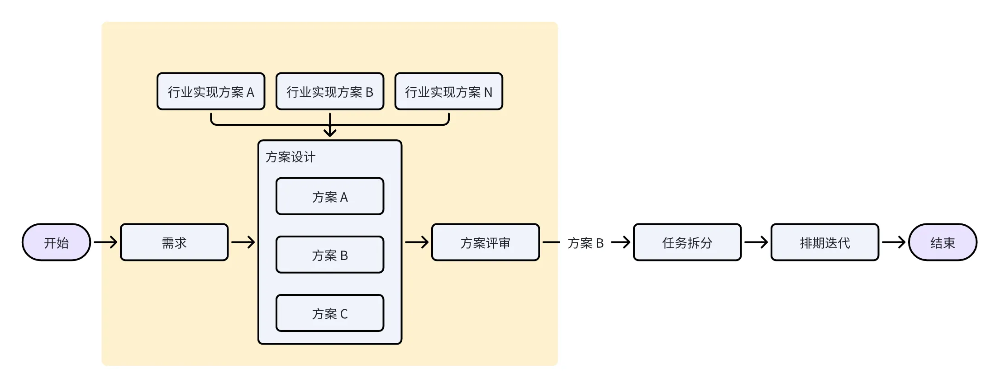
上述思维流程可以简单概括为：全面调研 -> 输出最佳方案 -> 排期实现。这种思维方式有很多好处，例如：
- 可以结合行业已有方案，输出最佳方案；
- 方案考虑周全、长远，可以满足现在，也能满足未来；
- 方案具有很强的可实施性，能够顺利排期迭代。
Go 项目开发中的一些开发"原则"
原则一：简洁 > 性能
在 Go 项目开发中，其实很多应用并不需要极高的性能。例如：A 日志包的性能会略低于 B 日志包的性能。但是 A 日志包可以更清晰、更方便的记录日志。在这种情况下，我可能会舍弃这点性能损失，二选择更简洁易用的 A 日志包。
在我的项目开发生涯中，发现一些开发者，为了一点点，几乎可以忽略的性能，写出了很复杂的代码逻辑，导致项目阅读、维护起来很难，个人觉得完全可以牺牲这微乎其微的性能，而让你的代码变得更加易读、易维护。
原则二：易读 > 代码量
有时候为了提高代码的易读性，我会牺牲代码量，适当增加一些代码，来使代码变得更加清晰、易理解。
例如，有以下代码段：
package main
type Novel struct {
Content string
FullContent string
}
func main() {
var category string
var novel Novel
// content := GetContentVX(category, novel)
}
func GetContentV1(category string, novel Novel) string {
if category != "military " || novel.FullContent == "" {
return novel.Content
}
return novel.FullContent
}
func GetContentV2(category string, novel Novel) string {
if category != "military " || (category == "military " && novel.FullContent == "") {
return novel.Content
}
return novel.FullContent
}
func GetContentV3(category string, novel Novel) string {
// 如果category不是military或者当category为military，但是FullContent字段为空时取Content字段的内容
// 否则取 FullContent 字段的内容
// 注意：不要调换或条件的位置
if category != "military " || novel.FullContent == "" {
return novel.Content
}
return novel.FullContent
}
通过 GetContentVX来获取 Novel 的内容。获取内容的逻辑为：如果category不是military或者当category为military，但是FullContent字段为空时取Content字段的内容，否则取FullContent字段的内容 。
有以下 3 种实现：
- GetContentV1：函数最简洁，但是从代码并不是很容易看得出取值逻辑。随着 项目的迭代，未来可能会有一些风险，例如：调换或条件位置，造成取值错误。
- GetContentV2：通过增加小量代码，来使判断逻辑更清晰；
- GetContentV3：对于不清晰的判断逻辑，进行详细的注释。
在实际开发中，我会选择 GetContentV3来详细说明这里的判断逻辑，避免未来调换或条件带来的取值异常。
上面，就是通过牺牲代码的简洁性，来提升代码的易读性，进而降低未来的维护成本和风险。
原则三：进度再赶，开发时也要思考代码的最佳实现方式
第三个原则，就是项目开发中，不管进度再紧迫，我都会花一点时间，哪怕加班，也要思考下代码中有哪些地方可以优化、有哪些地方会有更好的实现。因为，我坚信一个优秀的代码实现，是给自己未来排雷，让自己未来更轻松。
如何写出高质量的 Go 项目？
接下来，我就来介绍下如何开发一个高质量的 Go 项目。在回答这个问题之前，我们先来看另外两个问题：
- 为什么是 Go 项目，而不是 Go 应用？
- 一个高质量的 Go 项目具有哪些特点？
先来看第 1 个问题。Go 项目其实是一个偏工程化的概念，不仅包含了最核心的 Go 应用，还包含了项目管理和项目文档.
要开发一个高质量的 Go 项目，在我看来就是用“最佳实践”的方式去实现 Go 项目中的 Go 应用、项目管理和项目文档。具体来说，就是高效的管理项目、开发高质量的 Go应用、编写高质量的项目文档。
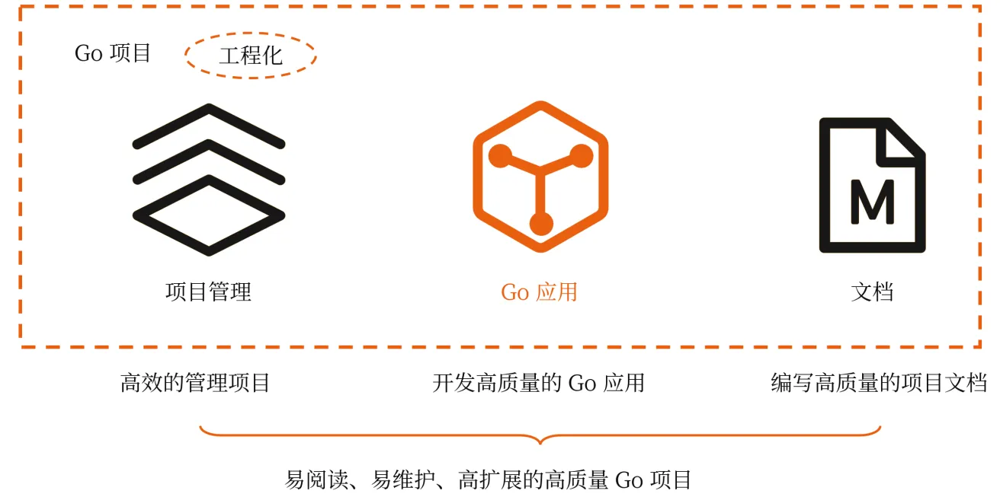
一个高质量的 Go 项目，不仅要求我们的 Go 应用是高质量的，还要确保我们的项目管理和文档也是高质量的。在我看来一个高质量的 Go 项目应该具备以下特点：
- **项目管理高效：**能够便捷高效的管理 Go 项目，例如：代码编译、单元测试、代码生成、代码静态检查等；
- **代码质量高：**代码结构清晰、简洁、可扩展；代码逻辑实现清晰、简洁、可扩展；符合 Go 代码开发规范、最佳实践；代码稳定、性能高等；
- **文档质量高：**拥有全面的文档，而且文档内容格式规范、质量高、更新及时等。
如何高效的管理 Go 项目？
项目管理有很多方面，如果你想高效的管理你的项目，在我看来要有一个统一的视图，并在每个视图中，选择最佳方案，并且还要考虑视图中的关联点如何高效的协作。
Go 项目开发中，通常涉及到的管理点，如下图所示：
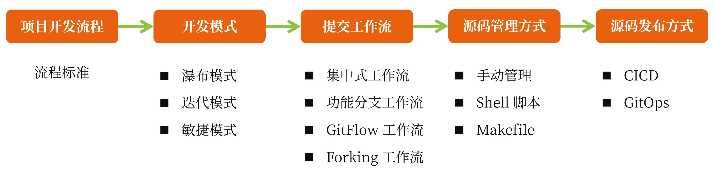
确定项目开发流程
项目开发流程通常因公司、团队、项目的不同而不同，但根据我的开发经验，项目开发流程通常差异不大。一般都是遵循以下标准的项目开发流程来迭代的：
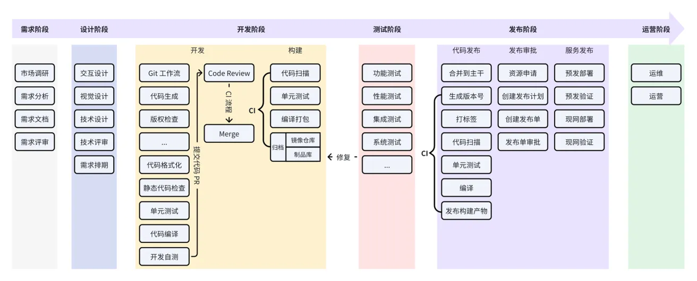
整个项目开发，按照开发流程，分为以下几个阶段：
-
**需求阶段：**需求阶段是将一个抽象的产品思路具化成一个可实施产品的阶段。在这个阶段，产品人员会讨论产品思路、调研市场需求，并进行需求收集和分析，整理出一个比较完善的需求文档。最后，产品人员会组织相关人员对需求进行评审，如果评审通过，就会进入设计阶段。
-
**设计阶段：**设计阶段，是整个产品研发过程中非常重要的阶段，包括的内容也比较多。常见的设计点有：
- **产品设计：**由产品人员负责，设计出产品的形态、功能和交互，并输出详细的产品设计文档。该步骤最终将一个抽象的产品量化，变成一个可以实施的产品。后期的研发工作都是围绕着该产品文档进行的；
- **交互设计：**由交互设计师负责，参照产品设计文档，将产品用原型图和交互流程的形式展现出来；
- **视觉设计：**根据需求文档和交互设计原型设计出产品视觉界面。例如视觉风格定义、图标设计、页面设计和页面颜色等；
- **技术设计：**技术设计包含了很多内容，例如研发流程设计、研发规范设计、系统架构设计、软件架构设计、前端技术设计、后端技术设计、数据库、API 接口设计等，所有跟技术实现相关的点都可以在这一阶段进行设计。
- **技术评审：**所有的技术设计都需要经过技术评审，评审通过后才能进行实际的开发；
- **需求排期：**这一步，项目经理会组织产研人员对需求进行细化和排期，需求排期尽可能细分，这样才能更好地评估工作量和风险。
-
**开发阶段：**开发阶段，从它的名字你就知道了，这是开发人员的主战场，同时它可能也是持续时间最长的阶段。在这一阶段，开发人员根据技术设计文档，编码实现产品需求；
-
**测试阶段：**测试阶段由测试工程师（也叫质量工程师）负责，这个阶段的主要流程是：测试工程师根据需求文档创建测试计划、编写测试用例，并拉研发同学一起评审测试计划和用例。评审通过后，测试工程师就会根据测试计划和测试用例对服务进行测试；
-
**发布阶段：**发布阶段主要是将软件部署上线，为了保证发布的效率和质量，我们需要遵循一定的发布流程；
-
**运营阶段：**运营阶段是研发流程的最后一个阶段是运营阶段，该阶段主要分为产品运营和运维两个部分。
- 产品运营：通过一系列的运营活动，比如线下的技术沙龙、线上的免费公开课、提高关键词排名或者输出一些技术推广文章等方式，来推高整个产品的知名度，提高产品的用户数量，并提高月活和日活。
- 运维：由运维工程师负责，核心目标是确保系统稳定的运行，如果系统异常，能够及时发现并修复问题。长期目标是通过技术手段或者流程来完善整个系统架构，减少人力投入、提高运维效率，并提高系统的健壮性和恢复能力。
选择开发模式
软件开发中，常用的软件开发模式有瀑布模式、迭代模式、敏捷模式。每种开发模式都有其优缺点和适用的场景。互联网时代，软件迭代速度很快，最适合的开发模式是敏捷模式。项目开发流程、开发模式会涉及到团队中的产品经理、项目经理、测试、开发、运维、运营等角色。因为涉及的角色比较多，所以通常需要从更高的视野去统一设计、规范。
瀑布模式
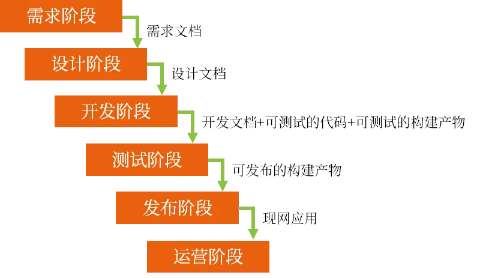
瀑布模式，是软件开发过程中常用的一种传统开发方法。在瀑布模式中，项目开发过程被划分为一系列有序的阶段，按照线性顺序依次完成，每个阶段都有明确的任务和交付物。
瀑布模式中，项目开发通常被分为需求阶段、设计阶段、开发阶段、测试阶段、发布阶段、运营阶段。每个阶段依次推进，每个阶段完成后才会进入下一个阶段，并伴随着交付产物：
- 需求阶段交付的一般是经过评审后的需求文档；
- 设计阶段交付的一般是设计文档和产品原型；
- 开发阶段交付的是可测试的代码、可测试的构建产物和开发文档；
- 测试阶段交付的是可发布的构建产物，例如：二进制文件、容器镜像；
- 发布阶段交付的是正在运行的现网应用。
瀑布模式的优点在于开发流程清晰、管理方便，适用于需求稳定、项目周期短的项目。然而，瀑布模式也存在一些缺点，如需求变更成本高、研发周期比较长，很难适应互联网时代对产品快速迭代的诉求。
迭代模式
因为瀑布模式，很难适应互联网时代对项目快速迭代的诉求。所以，后来诞生了迭代模式。
迭代模式是软件开发过程中常用的一种敏捷开发方法，旨在通过短周期的迭代循环迅速响应需求变化、提高交付质量和客户满意度。在迭代模式中，项目被切分为一系列小的轮次，每一个轮次都是一个迭代，每一次迭代都包括需求分析、设计、实现、测试和交付等环节。每次迭代的结果都是一个可运行的、增量改进的软件产品，这样可以持续地交付增量的软件版本。迭代模式不要求每一个阶段的任务都是做到最完美的，而是先把主要功能搭建起来，然后再通过客户的反馈信息进行不断地完善。
首先，在迭代模式中，项目团队首先进行项目规划和需求收集阶段，确定项目范围、优先级和目标。然后将整个项目划分为多个迭代周期，每个迭代通常持续 1~ 4 周。
在每个迭代开始时，团队会进行需求分析和设计工作，明确本次迭代的目标和任务。开发团队根据需求设计系统架构和功能，明确实现目标。
接着是编码阶段，开发团队会根据设计文档开始编写代码，实现本次迭代的功能。迭代周期结束时，团队会进行代码审查和单元测试，确保代码质量和功能完整性。
在测试阶段，测试团队会进行集成测试和系统测试，验证本次迭代开发的功能是否符合需求并且没有明显的缺陷。根据测试结果，团队可以及时发现和修复问题。
最后是交付阶段，将本次迭代开发完成的软件交付给用户或客户，收集反馈意见和建议，根据用户需求灵活调整下一次迭代的计划和优先级。
迭代模式的优点在于可以灵活应对需求变化、提高产品质量和用户满意度，同时能够更快地实现软件交付。它的灵活性极大地提升了适应需求变化的能力，克服了高风险、难变更、复用性低的特点。然而，迭代模式也存在一些挑战，如需求管理、进度控制等问题。迭代模式比较专注于开发过程，很少从项目管理的视角去加速和优化项目开发过程
敏捷模式
因为传统的研发方式越来越不能胜任互联网时代的研发需求，后来就出现了敏捷开发模式。
敏捷开发把一个大的需求，分成多个可分阶段完成的小迭代分别完成，每个迭代交付的是一个可使用的软件，在此过程中软件一直处于可使用状态。行业中有多种敏捷开发模式，其中最有代表性的是 Scrum 开发模式。
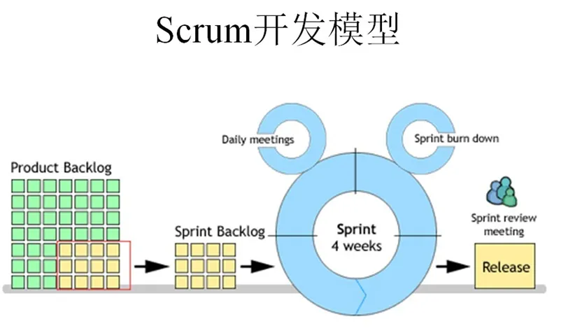
Scrum开发流程中的三大角色：
- 产品负责人（Product Owner）：主要负责确定产品的功能和达到要求的标准，指定软件的发布日期和交付的内容，同时有权力接受或拒绝开发团队的工作成果；
- 流程管理员（Scrum Master）：主要负责整个Scrum流程在项目中的顺利实施和进行，以及清除挡在客户和开发工作之间的沟通障碍，使得客户可以直接驱动开发；
- 开发团队（Scrum Team）：主要负责软件产品在Scrum规定流程下进行开发工作，人数控制在5~10人左右，每个成员可能负责不同的技术方面，但要求每成员必须要有很强的自我管理能力，同时具有一定的表达能力；成员可以采用任何工作方式，只要能达到Sprint的目标。
Scrum 开发模式的流程如下：
- 首选 PDM（产品负责人） 会确定一个Product Backlog（按优先顺序排列的一个产品需求列表，一般是按优先级排序）；
- Scrum Team 根据 Product Backlog 列表，做工作量的预估和安排；
- 有了 Product Backlog 列表，我们需要通过 Sprint Planning Meeting（Sprint 计划会议） 来从中挑选出一个 Story 作为本次迭代完成的目标，这个目标的时间周期是 1~4 个星期，然后把这个 Story 进行细化，形成一个Sprint Backlog；
- Sprint Backlog 是由 Scrum Team 去完成的，每个成员根据 Sprint Backlog 再细化成更小的任务（细到每个任务的工作量在 2 天内能完成）；
- 在 Scrum Team 完成计划会议上选出的 Sprint Backlog 过程中，需要进行 Daily Scrum Meeting（每日站立会议），每次会议控制在 15 分钟左右，每个人都必须发言，并且要向所有成员当面汇报你昨天完成了什么，并且向所有成员承诺你今天要完成什么，同时遇到不能解决的问题也可以提出，每个人回答完成后，要走到黑板前更新自己的 Sprint burn down（Sprint 燃尽图）；
- 做到每日集成，也就是每天都要有一个可以成功编译、并且可以演示的版本；
- 当一个 Story 完成，也就是 Sprint Backlog 被完成，也就表示一次 Sprint 完成，这时，我们要进行 Srpint Review Meeting（演示会议），也称为评审会议，产品负责人和客户都要参加（最好本公司老板也参加），每一个 Scrum Team 的成员都要向他们演示自己完成的软件产品（这个会议非常重要，一定不能取消）；
- 最后就是 Sprint Retrospective Meeting（回顾会议），也称为总结会议，以轮流发言方式进行，每个人都要发言，总结并讨论改进的地方，放入下一轮 Sprint 的产品需求中。
术语解释：
- 产品待办列表（Product Backlog）: 包含所有待实现的产品特性需求，由产品负责人负责维护和排序；
- 迭代待办列表（Sprint Backlog）: 每个迭代开始时选定的要完成的任务列表，由开发团队共同决定；
- 冲刺（Sprint）: 固定长度的开发周期，通常为2-4周。在每个冲刺中，团队致力于交付一定数量的功能；
- 冲刺计划会议（Sprint Planning Meeting）: 在冲刺开始前召开，产品负责人和开发团队确定要实现的功能和相关任务。
敏捷开发可以快速迭代、拥抱变化，所以非常适合互联网时代对软件的发布诉求。因此也是当前最为主流、用的最多的开发模式。
迭代模式 VS 敏捷模式
通过上面的介绍，你已经了解了迭代模式和敏捷模式。有没有感觉迭代模式和敏捷模式很像？我在刚开始学习的时候，会觉得二者有很多相同点，傻傻的分不清。本小节，我来介绍下二者的异同。
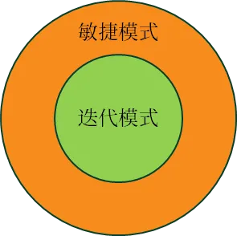
在我看来，迭代模式属于敏捷开发中的一部分，属于包含与被包含的关系。敏捷模式是一种基于模式和自组织的软件开发方法，强调团队合作、快速交付和持续改进，而且更注重用户的需求和反馈。
二者的核心区别如下：
- **用户参与：**敏捷开发更加强调用户的持续参与和反馈，而传统的迭代开发可能在迭代初期需要用户参与，但不如敏捷开发持续和深入；
- **性质不同：**迭代开发是软件开发的生命周期模型，是一种开发过程；敏捷开发是多种软件开发项目管理方法的集合，是一种开发方法。这是二者最根本的区别。敏捷开发不仅是一种开发模式，它还包括一套文化和实践，如日常站立会议、持续集成等，而传统的迭代开发不包括这些实践。
选择提交工作流
提交工作流影响的角色只有开发。所以，开发者可以根据需要选择适合的提交工作流。
常见的提交工作流如下：
- 集中式工作流；
- 功能分支工作流；
- GitFlow 工作流；
- Forking 工作流。
其中 GitFlow 工作流又有一些变种，例如，最受开发者欢迎的 2 个变种是：GitHub Flow、GitLab Flow。其中，GitHub Flow 最受开发者欢迎。我的开发生涯，经历过不同的开发团队，提交工作流采用的都是 GitHub Flow。当然，如果你的项目是一个开源项目，外部开发者，贡献代码时还需要遵循 Forking 工作流。
集中式工作流
我们先来看看集中式工作流，它是最简单的一种开发方式。集中式工作流的工作模式如下图所示：
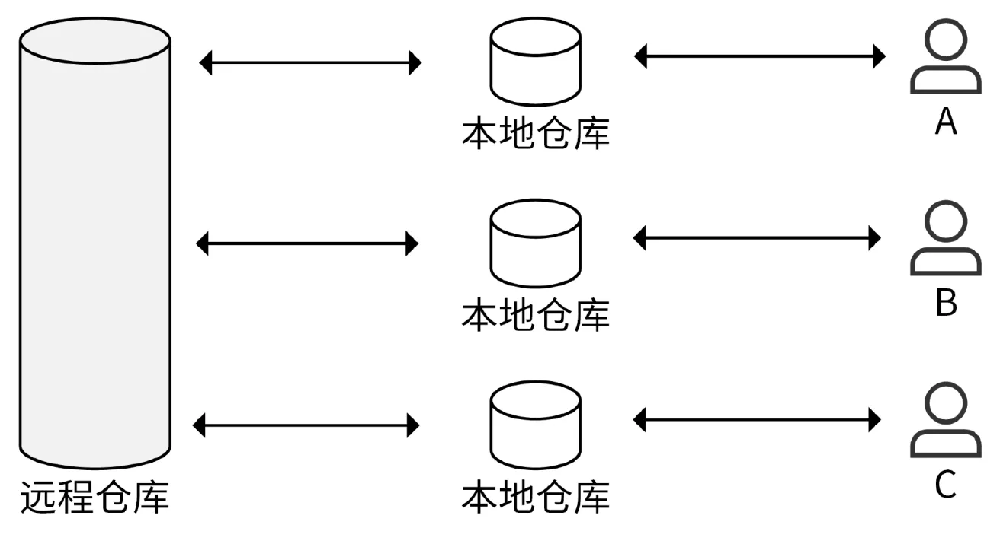
A、B、C 为 3 位开发者，每位开发者都在本地有一份远程仓库的拷贝：本地仓库。A、B、C 在本地的 master 分支开发完代码之后，将修改后的代码 commit 到远程仓库，如果有冲突就先解决本地的冲突再提交。在进行了一段时间的开发之后，远程仓库 master 分支的日志可能如下图所示：
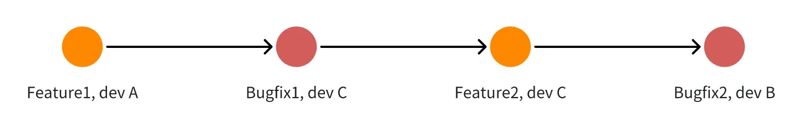
集中式工作流是最简单的开发模式，但它的缺点也很明显：不同开发人员的提交日志混杂在一起，难以定位问题。如果同时开发多个功能，不同功能同时往 master 分支合并，代码之间也会相互影响，从而产生代码冲突。
和其他工作流相比，集中式工作流程的代码管理较混乱，容易出问题，因此适合用在团队人数少、开发不频繁、不需要同时维护多个版本的小项目中。当我们想要并行开发多个功能时，这种工作流就不适用了，这时候怎么办呢？我们接下来看功能分支工作流。
功能分支工作流
功能分支工作流基于集中式工作流演进而来。在开发新功能时，基于 master 分支新建一个功能分支，在功能分支上进行开发，而不是直接在本地的 master 分支开发，开发完成之后合并到 master 分支，如下图所示：
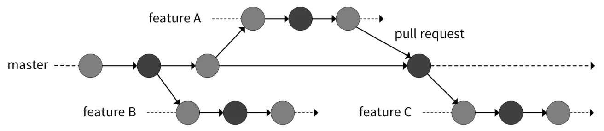
相较于集中式工作流，这种工作流让不同功能在不同的分支进行开发，只在最后一步合并到 master 分支，不仅可以避免不同功能之间的相互影响，还可以使提交历史看起来更加简洁。
还有，在合并到 master 分支时，需要提交 PR（pull request），而不是直接将代码 merge 到 master 分支。PR 流程不仅可以把分支代码提供给团队其他开发人员进行 CR（Code Review），还可以在 PR 页面讨论代码。通过 CR ，我们可以确保合并到 master 的代码是健壮的；通过 PR 页面的讨论，可以使开发者充分参与到代码的讨论中，有助于提高代码的质量，并且提供了一个代码变更的历史回顾途径。
GitFlow 工作流
Git Flow 工作流是一个非常成熟的方案，也是非开源项目中最常用到的工作流。它定义了一个围绕项目发布的严格分支模型，通过为代码开发、发布和维护分配独立的分支来让项目的迭代流程更加顺畅，比较适合大型的项目或者迭代速度快的项目。
GitFlow 工作流中，定义了 5 种预定义的开发分支，每种开发分支都完成指定类型的代码开发，各个分支之间代码合并也遵循预定的规范。GitFlow 工作流中，定义了以下 5 种分支，分别是 master、develop、feature、release 和 hotfix。其中，master 和 develop 为常驻分支，其他为非常驻分支，不同的研发阶段会用到不同的分支。这5种分支的详细介绍见下表：
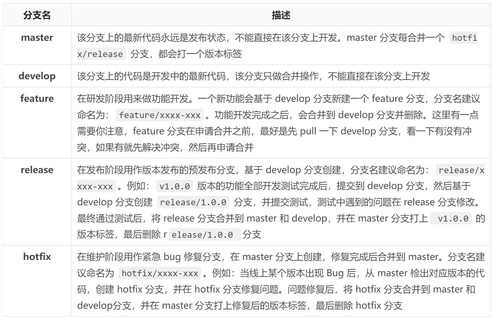
Forking 工作流
上面讲的 Git Flow 是非开源项目中最常用的，而在开源项目中，最常用到的是 Forking 工作流，例如Kubernetes、Docker 等项目用的就是这种工作流。这里，我们先来了解下 fork 操作。
fork 操作是在个人远程仓库新建一份目标远程仓库的副本，比如在GitHub 上操作时，在项目的主页点击 fork 按钮（页面右上角），即可拷贝该目标远程仓库。Forking 工作流的流程如下图所示。
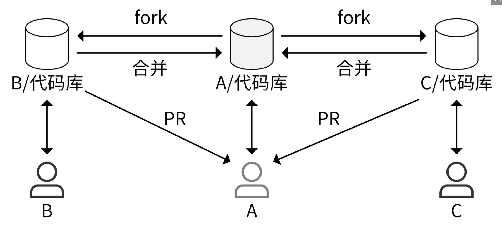
假设开发者 A 拥有一个远程仓库，如果开发者 B 也想参与 A 项目的开发，B 可以 fork 一份 A 的远程仓库到自己的 GitHub 账号下。后续 B 可以在自己的项目进行开发，开发完成后，B 可以给 A 提交一个 PR。这时候 A 会收到通知，得知有新的 PR 被提交，A 会去查看 PR并 code review。如果有问题，A 会直接在 PR 页面提交评论，B 看到评论后会做进一步的修改。最后 A 通过 B 的 PR 请求，将代码合并进了 A 的仓库。这样就完成了 A 代码仓库新特性的开发。如果有其他开发者想给 A 贡献代码，也会执行相同的操作。
选择合适的提交工作流
上面我介绍了常用的 4 种提交工作流，那么该如何选择呢？其实选择也比较简单。具体选择方法如下表所示：
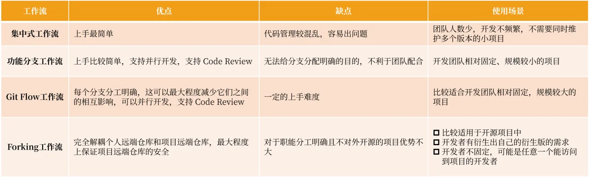
其实，在实际的项目开发中，集中式工作流和功能分支工作流，基本不会在正式的开发团队中被采用。项目开发中，团队内用的最多的是 GitFlow 工作流。如果你的项目还是一个开源项目，那么第三方开发者在给项目做贡献时，用的是 Forking 工作流。
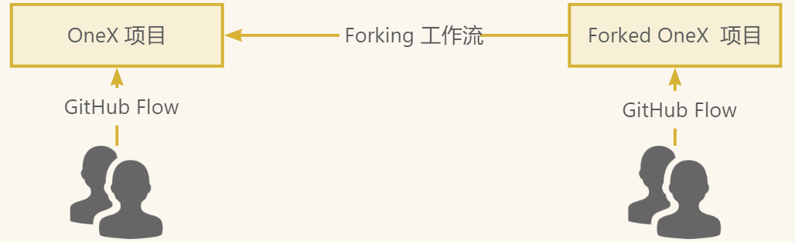
另外，在标准的 GitFlow 工作流，流程过于繁琐，已经不适用当前的敏捷开发模式。业界为此，衍生出了 2 个 GitFlow 工作流变种：GitHub Flow 和 GitLab Flow。其中，GitHub Flow 因为其简单易用、功能满足性，被很多开发团队所采用。
选择源码管理方式
这个很重要，因为这是我们管理项目的高频操作，选择对了，能够极大的提高我们的项目管理效率。当前项目开发中，源码管理方式一般有 3 种：手动管理、Shell 脚本管理、Makefile 管理。不同的源码管理方式带来的效率提升也是不同的，这里建议使用 Makefile 来管理你的项目。
选择源码发布方式
源码发布方式直接影响了我们的发布效率。当前有多种源码发布方式，例如：CICD、GitOps 等。当前用的比较多的是 CICD。GitOps 在我们的开发生涯中，也有使用过，整体体验比较 hack，操作繁琐，没有直接借助 CICD 平台来发布源码简单高效。
当前的源码发布方式基本上都是借助 CICD 平台，来自动化的完成项目的发布。例如：我们开发完代码、提交 PR ，并合并到 master 分支后，会触发代码管理平台的 Webhook，改 Webhook 会触发 CICD 流程。CICD 平台会根据 Webhook 的请求包，获取待发布的源码仓库、分支等信息，在 CICD 平台中，完成代码的静态代码检查、安全检查、编译、测试和部署等任务。当前比较流行的开源 CI/CD 工具有 Jenkins、GitLab、ArgoCD、Github Actions、JenkinsX 等。
GitOps 的工作流程通常包括以下几个主要步骤：
- **基础设施和应用声明：**将基础设施和应用程序的状态以声明性的方式存储在 Git 仓库中，如 Kubernetes 资源配置、应用代码等。
- **提交代码：**开发人员通过 Git 客户端向 Git 仓库提交代码变更，包括基础设施配置和应用的更新。
- **CI/CD 流水线：**CI/CD 流水线定期检测 Git 仓库的变更，将变更同步到基础设施平台，如 Kubernetes 等，进行自动化部署和更新。
- **监控和审计：**持续监控基础设施和应用程序的状态，及时发现问题并进行处理。通过 Git 提供的版本控制功能进行审计和回滚。
其他项目管理方式
项目管理手段其实有很多，我们还可以采用任何我们觉得有利于项目管理的方式。在采用其他项目管理方式时，要遵循一个原则就是：利 > 弊。因为引入一种项目管理方式，意味着增加了或多或少的项目管理操作，这可能会增加项目管理的负担。所以，在选择时，要注意取舍。
根据我的开发经验，我还觉得以下 2 种项目管理方式，能够有效的提高我们的项目管理效率，这里也分享给你：
- 自动生成代码；
- 借助自动化的工具。
自动生成代码
低代码的理念现在越来越流行。虽然低代码有很多缺点，但确实有很多优点，例如：
- 自动化生成代码，减少工作量，提高工作效率。
- 代码有既定的生成规则，相比人工编写代码，准确性更高、更规范。
目前来看，自动生成代码现在已经成为趋势，比如 Kubernetes 项目有很多代码都是自动生成的。我认为，想要更高效的管理你的源码，你也应该认真思考哪些地方的代码可以自动生成。
借助自动化的工具
在开发 Go 项目的过程中，我们也要善于借助工具，来帮助我们完成一部分工作。利用工具可以带来很多好处：
- 解放双手，提高工作效率；
- 利用工具的确定性，可以确保执行结果的一致性。例如，使用 golangci-lint 对代码进行检查，可以确保不同开发者开发的代码至少都遵循 golangci-lint 的代码检查规范；
- 有利于实现自动化，可以将工具集成到 CI/CD 流程中，触发流水线自动执行。
Go 项目开发中，其实有很多工具可供我们去使用。例如以下工具：
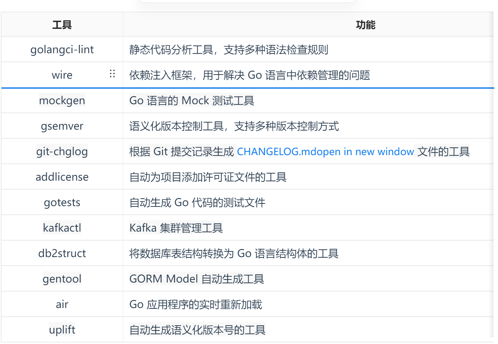
更多项目开中使用到的工具可以参考：
如何开发高质量的 Go 应用
设计合理的软件架构
工欲善其事，必先利其器。在动手编写 Go 代码，实现产品需求之前。你需要充分的理解产品需求、原型设计，并进行大量的技术调研，以确定应用的最佳实现方式。
产品需求很多时候会影响应用架构的实现，所以在设计阶段，开发者一定要跟产品需求对齐需求的每一个细节，跟设计同学确认好，每一个交互细节，以确保我们开发出来的应用，符合产品的预期。这样可避免耗费人力、时间开发完成之后，跟产品预期不一致，导致代码推到重来的巨坑中。
那么如何设计一个合理的软件架构呢？其实没有一个标准的答案。这里我介绍下我的设计思路：综合式创新设计方法。
什么是综合式创新设计方法呢？这不是一个官方的定义，也是我为了描述一个方法，自己杜撰的一个名词。所谓的综合式创新，就是在充分调研行业功能、架构实现之后，结合产品需求、项目要求，进行再创新的一种方法。其实跟上一节课，介绍的架构师思维是一样的。
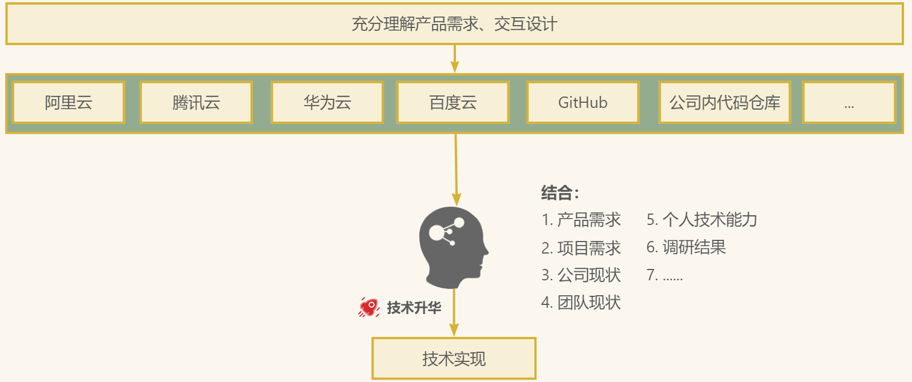
综合式创新的思路是这样的：在充分理解产品需求、交互设计的前提下，进行大量的技术调研。然后根据调研结果，结合产品需求、项目需求、公司现状、团队现状、个人技术能力、调研结果等，进行统筹考虑、设计。基于调研结果，结合现状，最终设计出一套合理的软件架构，该套软件架构，在你的认知范围内可以理解为是最优解。
要实践综合式创新并不容易，因为他需要你花大量的时间进行技术调研，并充分理解所调研的技术，然后通过不断的思考，对技术体系进行再升华，再创新，从而设计出最优的软件架构。在我看来，综合式创新要点如下：
- **全面的调研：**如果想设计出行业内的最优软件架构，那么首先，你得保证在行业内，你没有技术盲区。如果想没有技术盲区，最简单粗暴的方式，就是做大量、甚至全量的调研。你的技术触达面有多广，你的软件架构设计对比优势就有多广。在我的项目开发生涯中，稍微大一点的功能特性，我都喜欢做全量的技术调研。例如：我会把 GitHub 上同类的功能实现，全部都调研一遍，然后基于调研结果和个人技术能力，设计出更加合理的软件架构，取众家之长为己所用；
- **合理的取舍：**在经过全面的调研之后，其实你脑海中会有不同的技术方案实现，这时候你还要结合现状进行取舍。也许最终采用的技术方案不是最优的，但一定是符合现状的最优解。
综合式创新还有个非常有重要的附加价值就是技术积累。日积月累的技术调研，不仅可以提高你的技术能力，还可以丰富你脑海中的代码库，在下次开发时，你完全可以基于脑海中的代码库，快速设计出合理的技术方案，或者快速复用已有的优秀代码实现，从而提高你的开发效率和质量。
在经过充足的调研之后，你应该已经设计出了符合要求的、最优的软件架构。通常来说好的软件架构具有以下特点（你也可以使用以下特点来评估软件架构的质量）：
- 架构合理：设计出的软件架构应该是合理的，也就是说能够适应当前公司、团队的技术栈和技术环境，并且在人力、开发周期等资源投入上符合预期；
- 架构可行：架构应该是能够实现的，而不是很难或者最终证明不可行；
- 高扩展：架构应该是易扩展的。随着项目的迭代，应该能够很容易的集成近更多的功能，而不需要对架构进行大改或者重构。
- 易维护：架构应该是易维护的，这样可以在未来节省大量的开发成本。
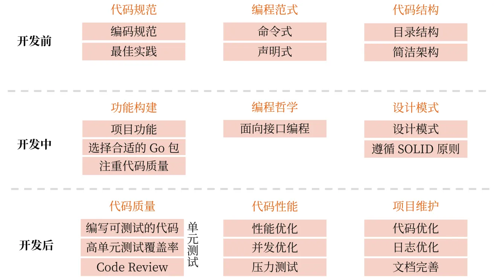
制定合理的代码规范
开发前，最重要的一件事便是制定合理的代码开发规范。那么该如何指定规范呢？其实并没有一个标准的流程或者规范。很多时候，是企业内团队根据自身的需求、现状来制定的。这里，我总结一些通用的思路和方法来供你参考。首先，规范应该作为一个真正的需求被提出、排期、跟踪和评审，直至完成。
当规范作为一个正式的项目需求被排期后，相关开发者需要做 3 步调研，以确定最终的规范类别：
- 团队内调研：在团队内跟领导、同事进行交流，确定团队内对规范的诉求和要求；
- 公司内调研：很多公司都有公司级的开发规范，公司内的其他团队，也有制定并分享一些规范。开发者需要调研公司级的规范，以及公司内其他团队的已有规范，结合这些规范，扩展和完善团队内的规范。；
- 开发社区调研：开发者还需要调研社区的优秀开发规范，结合团队内的需求，进一步完善团队内的开发规范。
经过这3步调研，开发者最终会有一份规范列表，里面包括了规范类别和每个类别具体有哪些规范项目。下面这些规范是企业开发中，经常会被用到的规范：
- 代码规范；
- 接口规范；
- 日志规范；
- 错误规范；
- 提交规范；
- 版本规范。
当然，我们也可以根据团队需要制定更多的规范。在制定新的规范时，要注意以下几点：
- **规范的必要性：**过多不必要的规范，不仅达不到规范效果，还会干扰其他规范的落地程度，增加开发者的开发负担；
- **规范的可执行性：**规范是否能够被有效执行，如果一个规范，不能被有效执行，个人感觉不如不去制定。
- **规范的可见性：**规范应该放在可以被开发者轻松找到的地方，比如：团队 wiki 中醒目的位置或者容易查找的位置，或者项目仓库的文档目录中。
有了明确的开发规范之后，开发者还需要思考规范如何才能够被很好的遵守并执行。根据我的开发经验，一般可通过以下方法来确保规范被有效的执行：
- 自动化工具：自动化工具是确保规范被执行的最有效方法。在实际开发中，靠开发人员自行遵守规范，很多时候，是不靠谱，不确定的，规范并不能被很好的执行。在实际的开发中，一个非常有效的方法是，使用工具来检查代码是否符合预定的规范。我们可以使用社区优秀的静态代码检查工具（例如：golangci-lint），或者公司内的静态代码检查工具，甚至，我们也可以自研静态代码检查工具，来检查现有工具不能检查到的规范项目；
- 集成到 CI/CD 流程中：可以将规范检查工具集成在 CI/CD 流程中，确保每一次提交、构建，代码都是符合预定规范的；
- 代码审查：在代码合入主干前的代码审查中，核心开发人员，不仅要确认代码功能无 bug，还需要确认代码符合开发规范，如果不符合，需要 PR 提交者重新修改，直至符合开发规范；
- 定期团队内宣讲：定期团队内进行规范宣讲，一方面能够使新人能够及时了解开发规范，另一方面，通过定期宣讲，可以加强团队成员的规范意识，最终形成团队内的规范化开发风气。
制定编码规范（涵最佳实践）
以下是一些社区中比较受关注的代码开发规范（涵最佳实践），可供你参考：
制定接口规范
Go 项目开发中，接口类型分为以下 3 种：
- HTTP 接口；
- RPC 接口；
- GraphQL 接口。
实际 Go 项目开发中，用的最多的是 RPC 接口和 HTTP 接口，其中 HTTP 接口用的最多。HTTP 接口当前最佳实践是采用 REST 接口规范。
REST 接口规范
REST 代表的是表现层状态转移（REpresentational State Transfer），REST 本身并没有创造新的技术、组件或服务，它只是一种软件架构风格，是一组架构约束条件和原则，而不是技术框架。
REST 有一系列规范，满足这些规范的 API 均可称为 RESTful API。REST 规范把所有内容都视为资源，也就是说网络上一切皆资源。REST架构对资源的操作包括获取、创建、修改和删除，这些操作正好对应 HTTP 协议提供的 GET、POST、PUT 和 DELETE 方法。如下图所示：
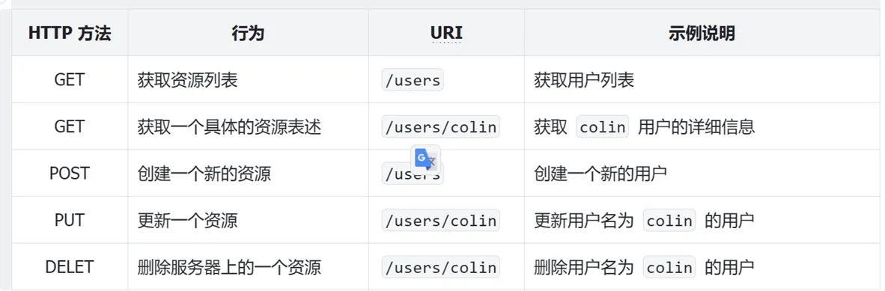
更多关于 REST 接口规范的介绍可参考文章：OneX 项目 REST 接口规范。
RPC 接口规范
RPC 接口规范其实没有太多可说的。总得来说就是：
- 方法名（接口名）格式规范，符合一定的规范。例如：
- 使用大写的驼峰命名法，例如：UpdateUser；
- 方法名见名知义，看到方法名，很容易理解接口要实现的功能类别；
- 方法参数只能有一个，类型为结构体指针，命名采用大写驼峰式，例如：*UpdateUserRequest；
- 方法返回值只能有一个，类型为结构体指针，命名采用大写驼峰式，例如：*UpdateUserResponse；
- 为保证接口可以安全的重试，Mutation 接口（Create/Update 等 Mutation 操作）需要保证幂等性；
当然，RPC 接口还有很多其他接口规范，例如：IDL 规范、结构体定义规范、注释规范等。具体可参考：TODO
制定日志规范
日志规范是 Go 项目开发中的一个必备规范。日志规范通常用来解决一下 3 类问题：
- 在何处打印日志？
- 在哪个日志级别打印日志？
- 如何记录日志内容？
以上 3 个问题的解答如下。
- 在需要的地方打印日志：
其实在哪里打印日志这个问题，是最没有标准答案的问题。你可以根据需要，在任何你觉得有必要记录日志的位置打印日志。以下是我建议的一些地方：
- **在分支语句处打印日志：**通常我们可以考虑在分支语句处打印日志，因为分支语句，往往能说明流程的走向；
- **不在循环中打印日志：**不建议在循环中打印日志，因为循环中打印日志，可能会打印出超多的无用日志；
- **在错误产生的最原始位置打印日志：**在我的开发生涯中，我发现很多开发者，喜欢层层封装错误。但我不喜欢，我只喜欢在最原始的位置处打印日志即可。因为排障时，绝大部分情况下只根据错误原始发生位置，即可定位到原因。层层封装日志，可能使代码显得很臃肿。我喜欢简洁的代码。在错误的最原始位置打印日志，可以直接通过日志，定位到错误发生的根因；
- **在接口请求处打印日志：**在我们的项目开发中，经常需要调用外部的 API 接口，这里建议在这些地方也打印日志，记录请求包、请求头、返回包等信息。因为当调用第三方接口出问题时，可以直接借助于这些日志信息，重新发请求测试，或者提供信息给第三方接口负责人，请求协助排查问题。在这些地方记录日志，要考虑加入 Filter 逻辑，因为请求参数、返回值可能会很大，不加过滤，全部记录日志，可能会打爆系统；
- 在合适的级别记录日志：
日志使用级别来代表一条日志的严重级别，通常日志包都提供以下几类日志级别（有些日志包不提供，如果需要，可自行封装）：
- Debug 级别；
- Info 级别；
- Warn 级别；
- Error 级别；
- Panic 级别；
- Fatal 级别。
在打印日志时，我们需要给日志选择合适的日志级别。
- 合理地记录日志：
-
在记录日志时，不要输出一些敏感信息，例如密码、密钥等；
-
统一日志记录格式。例如：
- 成功日志一律为 <动词> + <一些事>；
- 失败日志一律为 Fail to <动词> + <一些事>；
- 日志内容以大写字母开头，例如 log.Info("Update user function called")。
-
根据需要，日志最好包含三个信息：请求ID（RequestID）、用户（User）、行为（Action）
-
不要将日志记录在错误的日志级别上。
在记录日志时，还有一些建议想分享给你，这些建议如下：
- **持续优化日志：**开发调试、测试、现网排障时，不要遗忘一件事情，就是根据排障的过程优化日志打印；
- **不多不少：**打印日志要“不多不少”，避免打印没有作用的日志，也不要遗漏关键的日志信息；
- **支持动态开关 Debug 日志：**如果你不介意一些开发成本，并且有必要，你也可以给 API 接口加上动态开关 Debug 日志的功能，通常可以在 Web 中间件中实现；
- **总是将日志记录在本地文件：**在项目开发中，日志通常会被记录在本地文件、标准输出、异步上报给日志平台。但我比较建议直接将日志记录到本地文件中。记录到本地文件，一方面可以方便查看，另一方面也支持异步采集数据到分布式的日志中心中；
- **集中化日志存储处理：**现在软件架构越来越多的采用微服务架构，并且考虑到横向扩容、容灾等能力，同一个微服务还要启动多个实例，多个实例还需要打散到不同的服务器上。所以，如果没有一个统一的日志查询，你需要一个一个的登录部署服务器查看日志，排障效率是非常低的。所以，云原生时代，日志基本都会收集到分布式的日志搜索引擎中，例如：elasticsearch；
- **结构化日志记录：**日志记录格式需要时结构化的，结构化的日志可以支持按字段进行日志过滤、组合查询等。还能够更轻松的进行日志清洗，从中找出有用的数据，进行数据分析等。
更多关于日志规范的介绍可参考文章：OneX 项目日志规范。
制定错误规范
同日志规范一样，错误规范也是项目开发中，必须制定的一个规范。在 Go 项目开发中，通常我们期望接口返回错误可以实现以下功能：
-
**支持返回错误码：**错误码用来唯一的标识一个或一类错误，通常我们可以根据错误码快速定位到问题。并且根据错误码，我们还可以很方便的进行错误判断，并进行相应的错误处理；
- **自定义错误码：**因为 HTTP 状态码有限，不能满足业务不可知数量的错误码需求。所以，在 Go 项目开发中，我们通常需要制定业务自己的错误码；
- **易读的错误码：**因为错误码会直接展示给用户，所以我们期望错误码应该是易读的，最好见名知义。
-
**返回错误信息：**错误码作为错误标识，通常对长度是有要求的，不能很长。所以包含的错误信息必定有限。这时候如果想让接口调用方了解错误的具体原因，还需要返回更详细的错误信息。但在返回错误信息时，我们通常有以下诉求：
- **错误简洁、易理解、易读：**错误信息直接面向开发者或用户，一个简洁、易读、易理解的错误信息，不仅可以让开发者或用户获取到有用的信息，定位到错误的问题。还能够提高开发者或用户的使用体验。
- **错误数可数：**开发者或用户的脑容量很大，但大部分人却不希望花费很多脑容量去记忆你的错误信息，所以在不影响错误信息展示的前提下，可以控制错误信息的返回数量，减少开发者或用户的记忆成本；
- **错误信息可扩展：**项目返回的错误信息其实很多时候是不可预测的，随着项目的迭代，可能有越来越多的错误信息，所以，我们的错误返回要能够支持自定义错误信息，做到错误返回的可扩展性。
我研究过很多项目的错误码规范，包括尤其公有云厂商的错误规范。因为公有云作为一个技术提供方，本身就很偏重于技术，而且对外提供 SLA 很高的产品，包括接口，所以公有云厂商的错误码规范是非常值得借鉴的。
在调研了很多错误码实现后，我发现错误码的实现通常可以归结为以下 3 种实现（这里我直接忽略了，数目众多的，不合格错误码设计实现）：
- 始终返回 200 HTTP 状态码，在 HTTP Body 中返回错误码及错误信息；
- 根据错误设置 HTTP 状态码，并在 HTTP Body 中返回错误码及简单的错误信息；
- 根据错误设置 HTTP 状态码，并在 HTTP Body 中返回错误码及详细的错误信息；
接下来，我来给你详细介绍下每种错误实现及优缺点：
始终返回 200 HTTP 状态码，在 HTTP Body 中返回错误码及错误信息
这是最常见的错误实现方式。
{
"error": {
"message": "Syntax error \"Field picture specified more than once. This is only possible before version 2.1\" at character 23: id,name,picture,picture",
"type": "OAuthException",
"code": 2500,
"fbtrace_id": "xxxxxxxxxxx"
}
}
上面是 Facebook 的错误返回实现。可以看到，在错误返回中，有以下 3 个字段：
- message：介绍了错误的返回详情；
- code：指定了错误码。这里的错误码是整数。通常 0代表接口成功，非0代表接口失败。
- type、fbtrace_id：其他一些返回信息。
在我的职业生涯中，一提到错误码，很多开发者，脑海中的第一个实现方式便是使用整数来实现。在 2017、2018 年我所开发的一些项目中，当时就采用了整数的错误码，后来证明这种错误码并不是最优解。
整数固然天然可以用来作为唯一 ID，但存在以下问题：
- **信息量少：**看到整数 ID，你只是看到了一串数字而已，并不能从数字中分析出什么有用的信息；
- **可能返回敏感数据：**很多整数 ID，是单调递增的，如果用整数 ID 来指代错误，可能会透传出系统中的错误数量，有时候这是敏感数据。
所以，现在很多项目都使用字符串来指定错误 ID（也就是错误码）。国内外各大公有云厂商，也都是采用字符串来指定错误码。例如，以下是腾讯云容器服务的一些错误码：
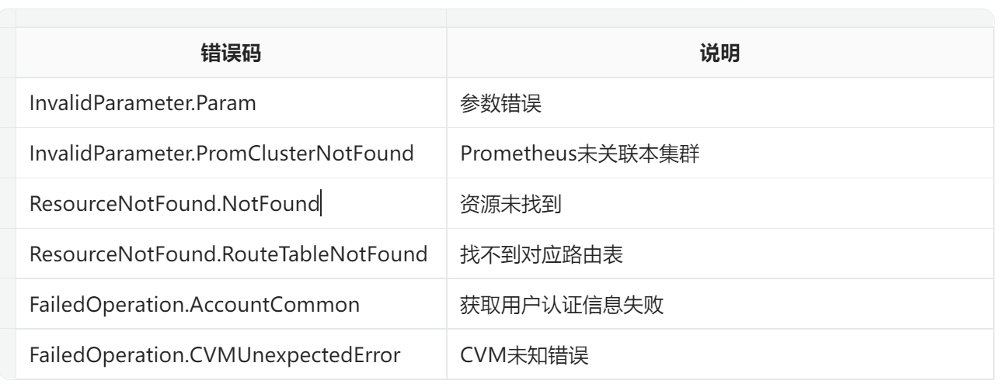
可以看到，通过字符串类型的错误码，可以很轻松的就知道错误的类别，这很有助于开发者判断失败的原因。
另外，这种错误返回方式有一个很大的弊端：不论请求成功与否，都需要解析错误返回，查看其中的业务码是否为 0，进而判断请求是否成功。也就是说，你不仅要判断 HTTP 状态码，还要 HTTP 返回体中的错误返回信息。
根据错误设置 HTTP 状态码，并在 HTTP Body 中返回错误码及简单的错误信息
下面是第 2 种错误返回方式。
HTTP/1.1 400 Bad Request
x-connection-hash: xxxxxxxxxxxxxxxxxxxxxxxxxxxxxxxxxxxxxxxxxxxxxxxxxxxxxx
set-cookie: guest_id=xxxxxxxxxxxxxxxxxxxxxxxxxxxxxxxxxxxxxxxxxxxxxxxxxxxxxx
Date: Thu, 01 Jun 2017 03:04:23 GMT
Content-Length: 62
x-response-time: 5
strict-transport-security: max-age=631138519
Connection: keep-alive
Content-Type: application/json; charset=utf-8
Server: tsa_b
{
"errors": [
{
"code": 215,
"message": "Bad Authentication data."
}
]
}
可以看到，上面的错误返回设计中，当出现业务处理错误时，会设置对应的 HTTP 状态码。这种方式，相比于第 1 种方式，更方便客户端处理错误。因为，客户端代码中必然会判断 HTTP 状态码，当 HTTP 状态码为 200时，说明 HTTP Transport 层成功，也说明了业务层是成功的（因为，业务层如果不成功，会设置 HTTP 状态码非 200）。也就是说，在请求成功时，相比于第 1 种方法，少了解析并判断业务错误返回这一步。从而使得客户端处理错误返回更加简单高效。
根据错误设置 HTTP 状态码，并在 HTTP Body 中返回错误码及详细的错误信息
HTTP/1.1 400
Date: Thu, 01 Jun 2017 03:40:55 GMT
Content-Length: 276
Connection: keep-alive
Content-Type: application/json; charset=utf-8
Server: Microsoft-IIS/10.0
X-Content-Type-Options: nosniff
{
"SearchResponse": {
"Version": "2.2",
"Query": {
"SearchTerms": "api error codes"
},
"Errors": [
{
"Code": 1001,
"Message": "Required parameter is missing.",
"Parameter": "SearchRequest.AppId",
"HelpUrl": "http://msdn.microsoft.com/en-us/library/dd251042.aspx"
}
]
}
}
第 3 种方法，基于第 2 种方法进行了更多的错误信息返回。例如，当接口失败时，会在错误信息中返回以下类型的字段：
- **参数：**失败发生的位置（参数名）；
- **URL：**指定对应的解决方案文档。
如何设计合理的错误返回规范
综合上面的 3 种错误返回设计，这里给出一个我觉得好的设计方案。
首先，错误返回码采用字符串，采用字符串最大的好处是，通过错误返回码很多时候，能够直接知道错误返回的类型和原因，协助开发者进行问题修复。
接着，当业务接口失败时，为了方便客户端的错误处理，我们还要设置对应的 HTTP 状态码。而且 HTTP 状态码不建议映射的很多，因为越多的状态码，就意味着客户端越多的判断分支。
接着，返回简洁的错误信息。不太建议返回复杂的错误信息，例如：帮助文档。个人感觉只返回错误信息即可，例如：message字段。因为返回更多的错误信息字段，意味着开发侧更多的维护成本和客户端更多的理解成本。最重要的是，在我的项目开发经验中，几乎没有开发者会用心维护更多的错误字段，例如：接口失败时，返回的 HelpUrl。所以，这里简洁的指出问题发生的详情即可。
下面是 OneX 项目的错误返回规范，供你参考：
HTTP/1.1 409 status code 409
Content-Length: 152
Content-Type: application/json
Date: Mon, 18 Sep 2023 23:49:29 GMT
Trace-Id: 754942ead2c206da531d8cc727c215e7
{
"metadata": {
"username": "colin"
},
"message": "User already exists",
"reason": "UserAlreadyExists",
"code": 409
}
上面的错误返回中，当接口失败时，设置了 HTTP 状态码为 409，返回了错误原因，英文版本的 Code UserAlreadyExists以及错误详情 User already exists。
更多错误规范，请参考：OneX 项目错误规范。
制定提交规范
当某个修复、功能、重构、优化等代码开发完成后，我们还需要提交我们的代码到 Git 仓库。代码提交操作每天都会发生。开发者 通过提交信息，能够简单、明了的知道某次代码变更的内容，这对于项目的排障、维护等帮助都很大。所以，想要开发一个高质量的 Go 项目，我们还需要制定提交规范。
什么是提交规范呢？直接点说就是执行 git commit 时的提交信息编写规范。当前的提交规范基本都是采用 Angular 提交规范。
Angular项目通常遵循特定的提交信息规范，以确保提交历史清晰、结构化，并且能够被自动化工具有效解析。这种提交信息规范通常被称为提交信息约定（Commit Message Convention）。典型的Angular提交规范实际上基于更广泛使用的Conventional Commits规范。
在 Angular 规范中，Commit Message 包含三个部分，分别是 Header、Body 和 Footer，格式如下：
<type>[optional scope]: <description>
// 空行
[optional body]
// 空行
[optional footer(s)]
其中，header 是必需的，body 和 footer 可以省略。在以上规范中，scope 必须用括号 () 括起来， <type>[<scope>] 后必须紧跟冒号，冒号后必须紧跟空格，2 个空行也是必须的。
Header
Header 部分只有一行，包括三个字段：type（必选）、scope（可选）和 subject（必选）。type、scope、subject说明如下：
- 类型 type，表示提交变更的目的。常见的类型包括：
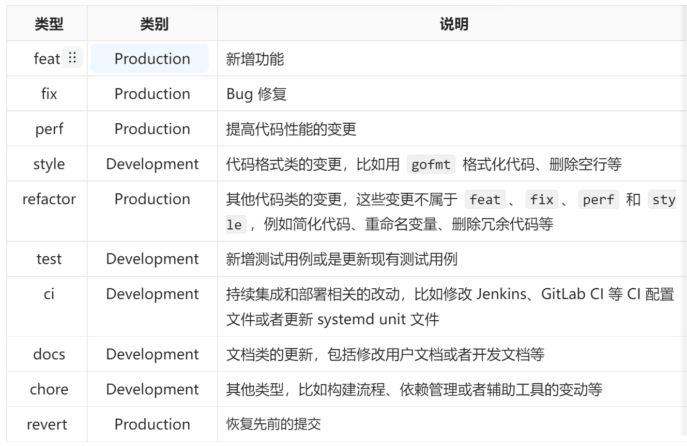
-
范围 scope，可选，它表示改动的影响范围，例如功能模块、页面、组件等。它有助于识别是哪一部分（或多个部分）代码库进行了更改。例如：
- fix(user-auth): correct auth token check
- feat(router): add navigation guard
-
描述 subject，是一行简单明了的变更描述，应该：
- 使用祈使句，例如 “change” 而不是 “changed” 或 “changes”；
- 不要以大写字母开头；
- 末尾不要加句号。
Body
Header 对 commit 做了高度概括，可以方便我们查看 Commit Message。那我们如何知道具体做了哪些变更呢？答案就是，可以通过 Body 部分，它是对本次 commit 的更详细描述，是可选的。
正文部分是对变更的详细说明。它包括变更的动机和目的，以及变更的具体描述。正文应该尽量帮助其他开发人员了解这次提交的意图和具体实现细节。每行最多72个字符。例如：
fix(auth): ensure tokens are validated correctly
Previously, the token validation logic was only checking expiration dates.
This commit adds additional claims verification to ensure the tokens were
actually issued by our server.
Footer
Footer 部分不是必选的，可以根据需要来选择，主要用来说明本次 commit 导致的后果。在实际应用中，Footer 通常包括：
- **问题追踪（Issue）：**例如 Closes #1234 表示关闭了编号为 1234 的问题。
- **BREAKING CHANGE：**列出重大变更。
Footer 格式如下：
BREAKING CHANGE: <breaking change summary>
// 空行
<breaking change description + migration instructions>
// 空行
// 空行
Fixes #<issue number>
例如：
fix(auth): ensure tokens are validated correctly
Previously, the token validation logic was only checking expiration dates.
This commit adds additional claims verification to ensure the tokens were
actually issued by our server.
Closes #1234
BREAKING CHANGE: The 'validateToken' method now requires an additional 'issuer' parameter.
如果这次提交解决了特定的问题或是进行了一些重大变更（如不兼容变更），可以在脚注中提及。通常包括：
- 问题追踪（Issue）：例如 Closes #1234 表示关闭了编号为 1234 的问题。
- BREAKING CHANGE：列出重大变更。
更多提交个规范，请参考：OneX 项目提交规范。
制定版本号规范
版本号规范在 Go 项目开发中，并不是必须的，但强烈建议，项目能够制定并遵循版本号规范。因为，版本号及规范，可以让项目的发布情况更加清晰，并且有助于开发人员进行排障，在某些情况下，还可以进行发布校验，使发布更加安全。
当前的版本号基本都是遵循语义化版本规范(SemVer)。
语义化版本规范介绍
语义化版本规范（SemVer，Semantic Versioning）是 GitHub 起草的一个具有指导意义的、统一的版本号表示规范。它规定了版本号的表示、增加和比较方式，以及不同版本号代表的含义。
在这套规范下，版本号及其更新方式包含了相邻版本间的底层代码和修改内容的信息。语义化版本格式为：主版本号.次版本号.修订号（X.Y.Z），其中 X、Y 和 Z 为非负的整数，且禁止在数字前方补零。版本号可按以下规则递增：
- 主版本号（MAJOR）：当做了不兼容的 API 修改；
- 次版本号（MINOR）：当做了向下兼容的功能性新增及修改。这里有个不成文的约定需要你注意，偶数为稳定版本，奇数为开发版本；
- 修订号（PATCH）：当做了向下兼容的问题修正。
例如，v1.2.3 是一个语义化版本号，版本号中每个数字的具体含义见下图：
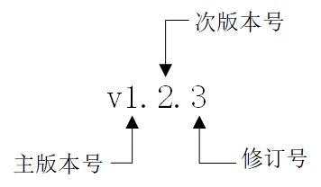
你可能还看过这么一种版本号：v1.2.3-alpha。这其实是把先行版本号（Pre-release）和版本编译元数据，作为延伸加到了 主版本号.次版本号.修订号 的后面，格式为 X.Y.Z[-先行版本号][+版本编译元数据]，如下图所示：
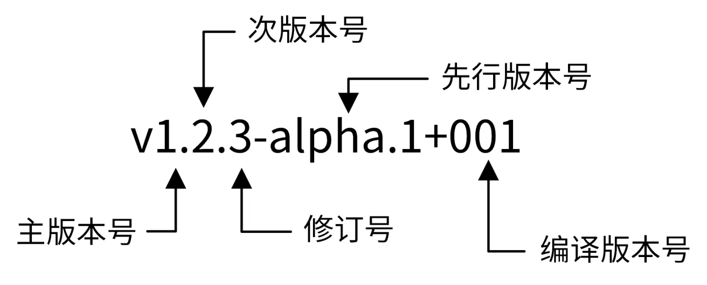
我们来分别看下先行版本号和版本编译元数据是什么意思。
先行版本号意味着，该版本不稳定，可能存在兼容性问题，格式为：X.Y.Z-[一连串以句点分隔的标识符]，比如下面这几个例子：
1.0.0-alpha
1.0.0-alpha.1
1.0.0-0.3.7
1.0.0-x.7.z.92
编译版本号，一般是编译器在编译过程中自动生成的，我们只定义其格式，并不进行人为控制。下面是一些编译版本号的示例：
1.0.0-alpha+001
1.0.0+20130313144700
1.0.0-beta+exp.sha.5114f85
注意，先行版本号和编译版本号只能是字母、数字，且不可以有空格。
语义化版本控制规范
语义化版本控制规范比较多，这里我给你介绍几个比较重要的。如果你需要了解更详细的规范，可以参考 这个链接 的内容。
- 标记版本号的软件发行后，禁止改变该版本软件的内容，任何修改都必须以新版本发行。
- 主版本号为零（0.y.z）的软件处于开发初始阶段，一切都可能随时被改变，这样的公共 API 不应该被视为稳定版。1.0.0 的版本号被界定为第一个稳定版本，之后的所有版本号更新都基于该版本进行修改。
- 修订号 Z（x.y.Z | x > 0）必须在只做了向下兼容的修正时才递增，这里的修正其实就是 Bug 修复。
- 次版本号 Y（x.Y.z | x > 0）必须在有向下兼容的新功能出现时递增，在任何公共 API 的功能被标记为弃用时也必须递增，当有改进时也可以递增。其中可以包括修订级别的改变。每当次版本号递增时，修订号必须归零。
- 主版本号 X（X.y.z | X > 0）必须在有任何不兼容的修改被加入公共 API 时递增。其中可以包括次版本号及修订级别的改变。每当主版本号递增时，次版本号和修订号必须归零。
如何确定版本号？
说了这么多，我们到底该如何确定版本号呢？这里我给你总结了这么几个经验。
第一，在实际开发的时候，我建议你使用 0.1.0 作为第一个开发版本号，并在后续的每次发行时递增次版本号。
第二，当我们的版本是一个稳定的版本，并且第一次对外发布时，版本号可以定为 1.0.0。
第三，当我们严格按照 Angular commit message 规范提交代码时，版本号可以这么来确定：
- fix 类型的 commit 可以将修订号 +1；
- feat 类型的 commit 可以将次版本号 +1；
- 带有 BREAKING CHANGE 的 commit 可以将主版本号 +1。
更多版本号规范，请参考：OneX项目版本号规范。
选择合适的编程范式
编程范式是一种编程的思想和方法论，是一种编写代码的概念框架，围绕着它的规则、风格和惯例进行编程。它涉及到选择不同的编程语言特性、数据结构、算法和架构模式等方面，以实现不同类型的应用程序。不同的编程范式可以有不同的优点和缺点，并且可以适用于不同的应用程序和领域。
想开发一个优秀的 Go 项目，我们还需要选择一个合适的编程范式。编程范式的选择，在 Go 项目开发中很少被开发者关注。当前开发者采用最多的是命令式编程范式。除了命令式，其实还有一种对项目质量、开发方式有极大影响的编程范式：声明式编程范式。声明式编程范式，在云原生开发，尤其是围绕 Kubernetes 的 Infra 层开发中用的很多。
命令式编程范式和声明式编程范式，又包含了很多子类，具体如下：
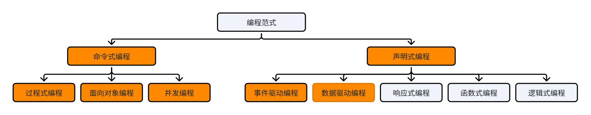
其中，橙色背景的编程范式，是 Go 项目开发中经常用到的编程范式。
命令式编程范式
**命令式编程：**通过一系列的指令来描述计算机执行的具体步骤，包括赋值语句、条件语句和循环等，关注计算机的状态变化和控制流程。典型代表语言：C、Java；
**主要特点和特征：**实现简单。
声明式编程范式
**声明式编程：**声明式编程是一种编程范式，它的主要思想是将程序的逻辑描述为一系列的声明，而非一系列的命令。在声明式编程中，开发者只需要描述要做什么，而不需要描述如何做。程序的执行过程由编译器或运行时系统来处理，开发者只需要关注程序的逻辑。例如，如果他们想让计算机画一张猫脸，他们可能会给出如下指令：“画一个脸，画两只眼睛、两只耳朵和一个嘴巴”。
**主要特点和特征：**更加健壮、用户易理解，适用于更关注最终状态的场景。
设计合理的代码结构
代码结构中，比较重要的设计项有以下 2 项：
- 目录结构；
- 代码架构。
设计合理的目录结构
目录结构通常是指我们的代码由哪些目录组成，每个目录下存放什么文件、实现什么功能，以及各个目录间的依赖关系等。
在项目开发中，目录结构直接决定了项目后期的维护难易度，以及项目的功能组织结构。所以，我们非常有必要设计一个合理的目录结构。在 Go 项目开发中，并没有一个官方的目录结构设计。但 Go 社区有一些推荐的目录结构设计方式，当前最受欢迎、最被大家接受的目录结构设计方式是 project-layout 目录结构设计（简体中文介绍）。
下图是 project-layout 中建议的目录。为了方便你查看，我按功能类别进行了整理：
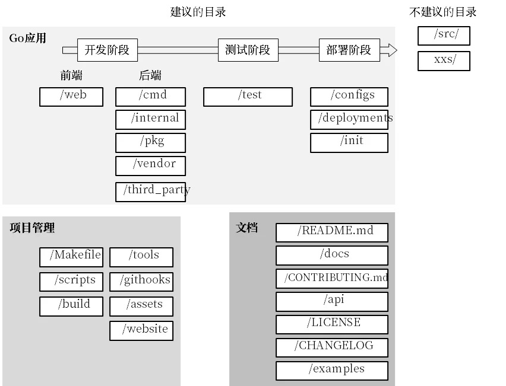
至于，每个目录存放的功能，及目录的组织方式，你可以直接阅读 project-layout 项目文档。
设计合理的代码架构
设计合理的代码架构对 Go 项目的质量影响也很大。项目开发中可以采用的代码架构有很多，例如：六边形架构、洋葱架构、尖叫架构等。Go 项目开发中，用的最多的是简洁架构。简洁架构的架构设计跟 DDD 领域中的洋葱架构基本是保持一致的。
标准的简洁架构实现如下图所示：
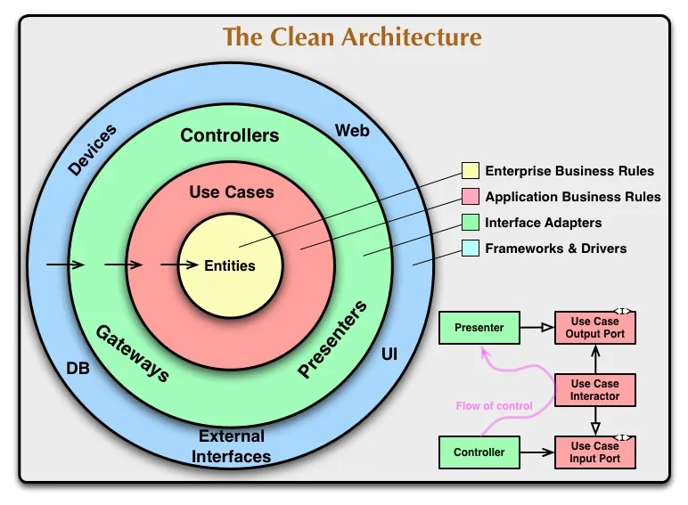
我们可以看到图中有四层。 蓝色层、绿色层、红色层和黄色层。 每个圆圈代表软件的不同区域。 最外层是软件的最低级别，随着深入，级别会更高。 一般来说，当我们深入时，该层就不太容易发生变化。图中的黑色箭头表示依赖规则。
上述简洁架构，通过将系统的核心业务逻辑与外部环境和技术分离，实现了高内聚、低耦合的架构设计。它强调将业务规则和领域模型放在最核心的实体层和用例层中，以实现系统的可测试性、独立性、可维护性和可扩展性。同时，简洁架构也提供了清晰的分层结构，使开发团队能够更好地理解和管理系统的各个组成部分。
上图中的简洁架构分为了 4 层：
- **实体层（Entities）：**是指表示业务领域中的核心概念和业务规则的对象。一个实体可以是一个具有方法的对象，也可以是数据结构或方法的集合。其实，只要能够被业务应用使用，它可以是任何 形式。通常实体层是最不可能变化的一层。在 Go 项目开发中，数据库 Model 就可以看作是一个实体。实体层包含了领域模型的定义，它们具有独立的生命周期和行为，可以封装业务逻辑并保持数据的一致性。实体层通常包括实体（Entity）、值对象（Value Object）和聚合根（Aggregate Root）等。
- **用例层（Usecases）：**是指实现业务逻辑的部分，它负责协调各个实体和值对象之间的交互，以完成具体的业务需求。用例层，会被业务逻辑的变更而影响，但不会被其他层所影响，例如：实体层、UI、数据库等。用例层是领域模型的应用层，它将业务规则转化为可执行的操作，同时也负责处理与外部系统的交互。用例层通常包括用例（Usecase）和领域服务（Domain Service）等。
- **控制层（Controller）：**是指负责接收和处理外部请求的部分，它将用户的输入转化为领域模型的操作，并将结果返回给用户。控制层通常包括控制器（Controller）和网关（Gateway）等，它们负责处理请求的路由、验证和转发。在这个层次上还包括任何其他适配器，用于将数据从某个外部形式（如外部服务）转换为用例和实体使用的内部形式。
- **框架和驱动层（Framework & Driver）：**是指与外部环境和技术相关的部分，它提供了与外部系统的交互和数据存储的支持。框架和驱动层包括数据库、网络通信、Web 框架等组件和工具，它们与实体层、用例层和控制层进行交互，以实现系统的功能和性能要求。除了与下层通信相关的代码外，这一层，为了可维护性，我们不会编写太多的代码。
上述简洁架构的标准实现。但在我的开发的项目中，我更愿意采用以下软件架构设计方式：
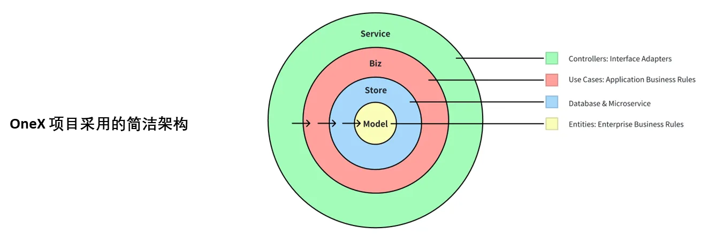
- 模型层（Model）：模型层在 Bob 大叔给出的简洁架构中也叫做实体层（Entities）在这一层中存储对象的结构和它的方法；
- 服务层（Service）：服务层接收 HTTP/gRPC请求，并进行参数解析、参数校验、逻辑分发处理、请求返回这些操作。服务层会将逻辑分发给业务层，业务层处理后返回，返回数据在服务层中被整合再加工，最终返回给请求方。服务层相当于实现了业务路由的功能；
- 业务层 （Biz）：业务层主要用来完成业务逻辑处理，我们可以把所有的业务逻辑处理代码放在业务层。业务层会处理来自服务层的请求，并根据需要请求存储层完成数据的 CURD 操作；
- 存储层（Store）：存储层也即 Bob 大叔简洁架构中的 Frameworks & Drivers 层，负责与数据库、外部服务等的交互，作为应用程序的数据引擎进行应用数据的输入和输出。这里需要注意，存储层仅对数据库/外部服务执行 CRUD 操作，不封装任何业务逻辑。这一层也会起到数据转换的作用：将从数据库/微服务中获取的数据转换为服务层、业务层能识别的数据结构，将服务层、业务层的数据格式转换为数据库或外部服务能识别的数据格式。
可以看到想对于标准的简洁实现，我所以的简洁架构有了一些变化，变化点及原因如下：
- Entities -> Model：OneX 项目的 ORM 使用了 GORM，GORM 中跟底层数据库表映射的 Go 结构体成为 Model，为了保持一致，这里的 Entities 改名为 Model；
- Use Cases -> Biz：因为 Use Cases 不是很容易理解，所以这里改名为 Biz（Business）；
- Service -> Controllers：因为 OneX 项目中，很多组件是一个 gRPC 服务，gRPC 中，通常用 Service 来指代 Controllers。又因为 OneX 使用了 Git 大仓模式，存储中还有 kubernetes controller 的实现，为了跟 kubernetes conotroller 进行区分。所以，为了跟 gRPC 的命名规范保持一致，并且跟 kubernetes controller 名字进行区分，这里将简洁架构中的 Controllers 层改名成了 Service 层；
按最佳实践的方式构建项目功能
Go 项目开发中功能概览
本小节，我们来从上层视角看下 Go 项目开发中，都有哪些核心功能需要我们去实现。下图是 Go 项目开发中需要我们去实现的功能大类：
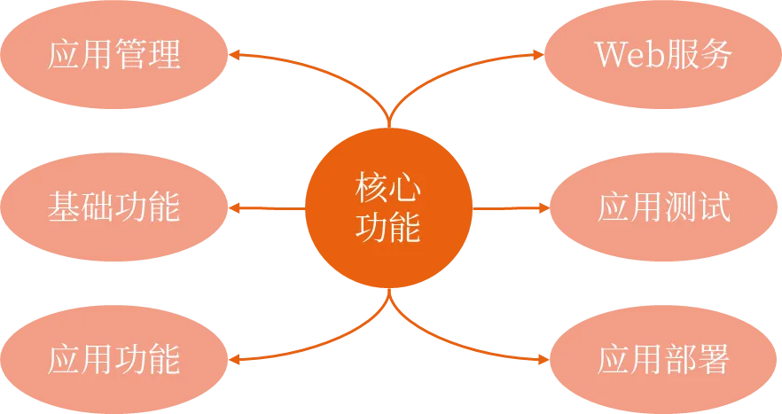
Go 项目开发中主要包括以下 6 大类功能项：
- 应用管理：
- 基础功能：
- 应用功能：
- Web 服务：
- 应用测试；
- 应用部署。
接下来，我就来详细给你介绍这些功能点的实现。
功能构建：应用管理
你可以根据需要在 Makefile 中集成任何你需要的应用功能点，通常 Go 项目开发中包含了以下应用管理点：
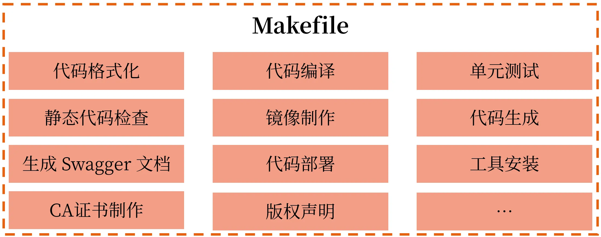
为了便于管理应用，最佳方式是将上述管理功能都统一集成在 Makefile 中。
功能构建：基础功能
在真正开发 Go 业务代码前，我们还需要将基础功能开发好。因为 Go 的功能都是以包的形式对外提供，所以这些基础功能我们通常可以直接复用优秀的开源 Go 包，或者基于优秀的开源 Go 包进行一些封装。通常情况下，一个 Go 项目需要以下基础功能：
-
日志包：我们可以使用优秀的开源日志包。Go 项目开发中用的比较多的日志包是：sirupsen/logrus、uber-go/zap。当然最新版本的 Go，也提供了 log/slog可用，但 log/slog功能比较简单，我还是喜欢用 zap包。很多时候，开源的日志包不能直接满足需求，因此 Go 项目开发中，大部分情况下会基于 zap包封装成项目需要的日志包；
-
错误包：Go 项目开发中有些项目会封装一个错误包供项目使用。错误包可以集成业务指定的错误码；
-
应用框架：一个 Go 项目中包含了 Go 应用，所以我们还需要开发一个可构建出二进制文件的 main 函数。我们可以自己手撸代码实现。也可以借助于优秀的 Go 包，当前用的比较多的 Go 包如下：
-
数据库：Go 项目开发中，还需要持久化存储数据。当前用的比较多的数据库有：mongo、redis、mysql、kafka、etcd 等。所以，我们还需要使用这些数据库的 Go SDK。例如：MySQL 我们可以使用 gorm 包。
功能构建：应用功能
在 Go 项目开发中，我们需要构建各种各样的功能。当前实现的最多的应用功能如下：
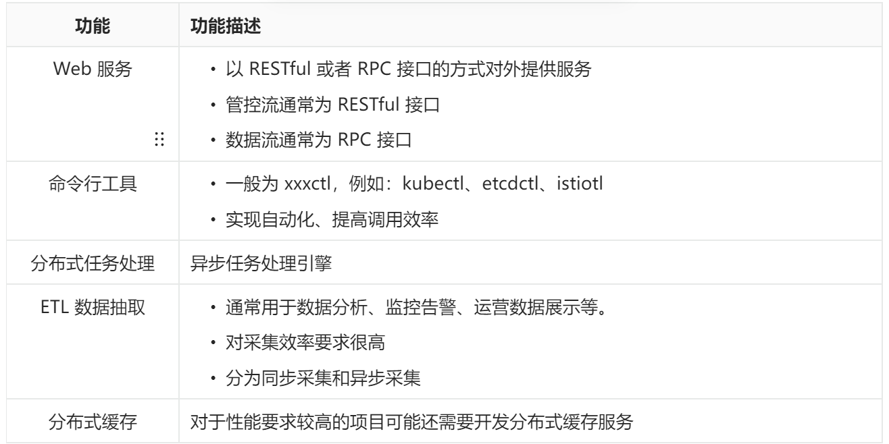
功能构建：Web 服务
Go 项目开发中，绝大部分情况下是开发一个 Web 服务，例如：HTTP 服务/RPC 服务，所以这里我们来看下 Web 服务通常具有哪些功能。功能列表如下：
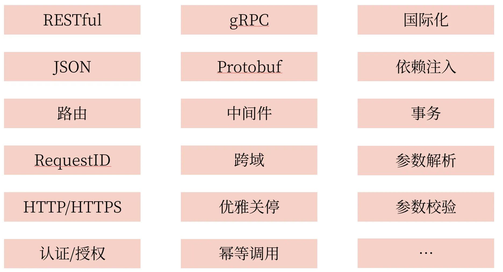
功能构建：应用测试
代码开发完成后，还需要测试我们的项目。项目测试通常会涉及：
- 单元测试；
- 性能测试；
- 性能分析；
- 覆盖率测试；
另外，还会借助一些测试包或者测试工具，来提高编写单元测试的效率。当前用的比较多的测试包有：Testify、GoConvey。Mock 包有：sqlmock、httpmock、bouk/monkey、golang/mock。
功能构建：应用部署
应用完成开发测试之后，就需要部署到测试环境或者生产环境。我们可以采用多种不同的部署方式，例如：裸金属、虚拟机或容器化。当前应用基本都是部署在 Docker+Kubernetes 平台上。
此外，在容器化部署应用时，目前越来越多的使用 Helm 来部署应用。并使用 CICD 将整个部署流程自动化。
在部署应用时，我们需要关注应用的高可用、负载均衡（也即水平扩缩容能力）、弹性伸缩、安全等能力。
功能构建：常用的 Go 包
在 Go 项目开发中，经常会用到一些优秀的 Go 包。常用的 Go 包列表如下：
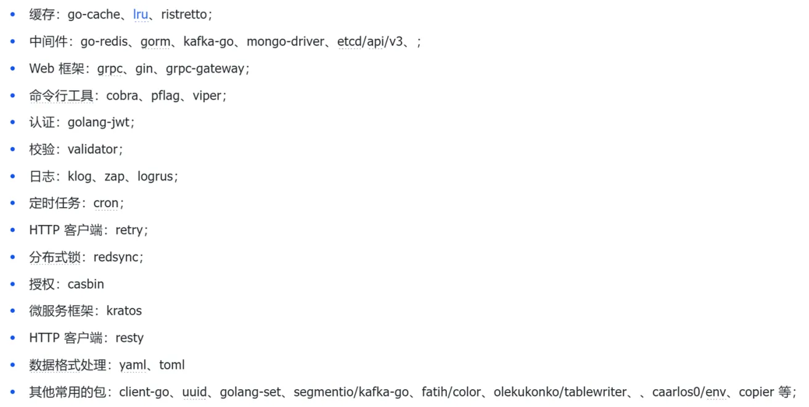
遵循 Go 编程哲学
编程哲学，其实就是要编写符合Go语言设计哲学的代码。Go语言有很多设计哲学，对代码质量影响比较大的，我认为有两个：面向接口编程和面向"对象"编程。
面向接口编程
我们先来看下面向接口编程。
Go 接口是一组方法的集合。任何类型，只要实现了该接口中的方法集，那么就属于这个类型，也称为实现了该接口。
有很多优秀的开源项目，都大量采用了面向接口的边方式，例如：Kubernetes、Docker、Prometheus 等。
接口的作用，其实就是为不同层级的模块提供一个定义好的中间层。这样，上游不再需要依赖下游的具体实现，充分地对上下游进行了解耦。很多流行的Go设计模式，就是通过面向接口编程的思想来实现的。
我们看一个面向接口编程的例子。下面这段代码定义了一个Bird接口，Canary和Crow类型均实现了Bird接口。
package main
import "fmt"
// 定义了一个鸟类
type Bird interface {
Fly()
Type() string
}
// 鸟类：金丝雀
type Canary struct {
Name string
}
func (c *Canary) Fly() {
fmt.Printf("我是%s，用黄色的翅膀飞\n", c.Name)
}
func (c *Canary) Type() string {
return c.Name
}
// 鸟类：乌鸦
type Crow struct {
Name string
}
func (c *Crow) Fly() {
fmt.Printf("我是%s，我用黑色的翅膀飞\n", c.Name)
}
func (c *Crow) Type() string {
return c.Name
}
// 让鸟类飞一下
func LetItFly(bird Bird) {
fmt.Printf("Let %s Fly!\n", bird.Type())
bird.Fly()
}
func main() {
LetItFly(&Canary{"金丝雀"})
LetItFly(&Crow{"乌鸦"})
}
这段代码中，因为Crow和Canary都实现了Bird接口声明的Fly、Type方法，所以可以说Crow、Canary实现了Bird接口，属于Bird类型。在函数调用时，可以传入Bird类型，并在函数内部调用Bird接口提供的方法，以此来解耦Bird的具体实现。
好了，我们总结下使用接口的好处吧：
- 代码扩展性更强了。例如，同样的Bird，可以有不同的实现。在开发中用的更多的是，将数据库的CURD操作抽象成接口，从而可以实现同一份代码对接不同数据库的目的。
- 可以解耦上下游的实现。例如，LetItFly不用关注Bird是如何Fly的，只需要调用Bird提供的方法即可。
- 提高了代码的可测性。因为接口可以解耦上下游实现，我们在单元测试需要依赖第三方系统/数据库的代码时，可以利用接口将具体实现解耦，实现fake类型。
- 代码更健壮、更稳定了。例如，如果要更改Fly的方式，只需要更改相关类型的Fly方法即可，完全影响不到LetItFly函数。
所以，我建议你，在Go项目开发中，一定要多思考，那些可能有多种实现的地方，要考虑使用接口。
面向“对象”编程。
接下来，我们再来看下面向“对象”编程。
面向对象编程（OOP）有很多优点，例如可以使我们的代码变得易维护、易扩展，并能提高开发效率等，所以一个高质量的Go应用在需要时，也应该采用面向对象的方法去编程。那什么叫“在需要时”呢？就是我们在开发代码时，如果一个功能可以通过接近于日常生活和自然的思考方式来实现，这时候就应该考虑使用面向对象的编程方法。
Go语言不支持面向对象编程，但是却可以通过一些语言级的特性来实现类似的效果。
面向对象编程中，有几个核心特性：类、实例、抽象，封装、继承、多态、构造函数、析构函数、方法重载、this指针。在Go中可以通过以下几个方式来实现类似的效果：
- 类、抽象、封装通过结构体来实现。
- 实例通过结构体变量来实现。
- 继承通过组合来实现。这里解释下什么叫组合：一个结构体嵌到另一个结构体，称作组合。例如一个结构体包含了一个匿名结构体，就说这个结构体组合了该匿名结构体。
- 多态通过接口来实现。
至于构造函数、析构函数、方法重载和this指针等，Go为了保持语言的简洁性去掉了这些特性。
Go中面向对象编程方法，见下图：
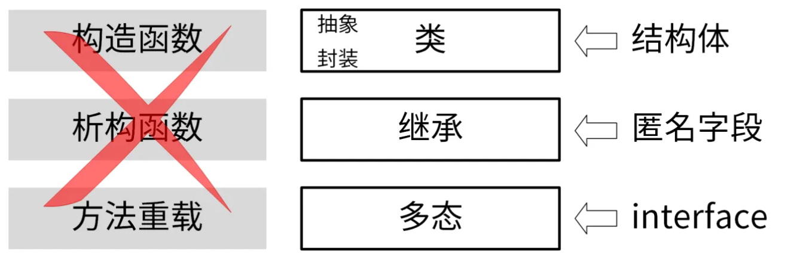
我们通过一个示例，来具体看下Go是如何实现面向对象编程中的类、抽象、封装、继承和多态的。代码如下：
package main
import "fmt"
// 基类：Bird
type Bird struct {
Type string
}
// 鸟的类别
func (bird *Bird) Class() string {
return bird.Type
}
// 定义了一个鸟类
type Birds interface {
Name() string
Class() string
}
// 鸟类：金丝雀
type Canary struct {
Bird
name string
}
func (c *Canary) Name() string {
return c.name
}
// 鸟类：乌鸦
type Crow struct {
Bird
name string
}
func (c *Crow) Name() string {
return c.name
}
func NewCrow(name string) *Crow {
return &Crow{
Bird: Bird{
Type: "Crow",
},
name: name,
}
}
func NewCanary(name string) *Canary {
return &Canary{
Bird: Bird{
Type: "Canary",
},
name: name,
}
}
func BirdInfo(birds Birds) {
fmt.Printf("I'm %s, I belong to %s bird class!\n", birds.Name(), birds.Class())
}
func main() {
canary := NewCanary("CanaryA")
crow := NewCrow("CrowA")
BirdInfo(canary)
BirdInfo(crow)
}
将上述代码保存在 oop.go 文件中，执行以下代码输出如下：
$ go run oop.go
I'm CanaryA, I belong to Canary bird class!
I'm CrowA, I belong to Crow bird class!
在上面的例子中，分别通过Canary和Crow结构体定义了金丝雀和乌鸦两种类别的鸟，其中分别封装了name属性和Name方法。也就是说通过结构体实现了类，该类抽象了鸟类，并封装了该鸟类的属性和方法。
在Canary和Crow结构体中，都有一个Bird匿名字段，Bird字段为Canary和Crow类的父类，Canary和Crow继承了Bird类的Class属性和方法。也就是说通过匿名字段实现了继承。
在main函数中，通过NewCanary创建了Canary鸟类实例，并将其传给BirdInfo函数。也就是说通过结构体变量实现实例。
在BirdInfo函数中，将Birds接口类型作为参数传入，并在函数中调用了birds.Name，birds.Class方法，这两个方法会根据birds类别的不同而返回不同的名字和类别，也就是说通过接口实现了多态。
遵循优秀的软件设计方法
我们还可以通过遵循一些业界沉淀下来的，优秀的软件设计方法来提高 Go 应用的质量。
优秀的软件设计方法有很多，其中有两类方法对我们代码质量的提升特别有帮助，分别是设计模式（Design pattern）和SOLID原则。
在我看来，设计模式可以理解为业界针对一些特定的场景总结出来的最佳实现方式。它的特点是解决的场景比较具体，实施起来会比较简单；而SOLID原则更侧重设计原则，需要我们彻底理解，并在编写代码时多思考和落地。
设计模式：遵循常见的设计模式
在软件领域，沉淀了一些比较优秀的设计模式，其中最受欢迎的是GOF设计模式。GOF设计模式中包含了3大类（创建型模式、结构型模式、行为型模式），共25种经典的、可以解决常见软件设计问题的设计方案。这25种设计方案同样也适用于Go语言开发的项目。25 种经典的设计模式如下：
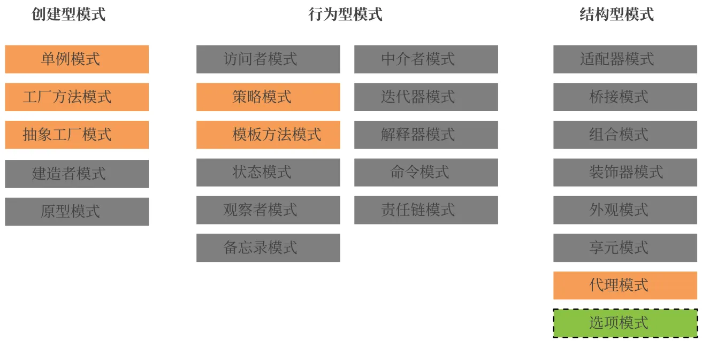
设计模式：遵循 SOLID 原则
如果说设计模式解决的是具体的场景，那么SOLID原则就是我们设计应用代码时的指导方针。
SOLID 原则是由罗伯特·C·马丁在 21 世纪早期引入，指代了面向对象编程和面向对象设计的五个基本原则。遵循SOLID 原则可以确保我们设计的代码是易维护、易扩展、易阅读的。SOLID 原则同样也适用于 Go 程序设计。具体 SOLID 编码原则见下表：
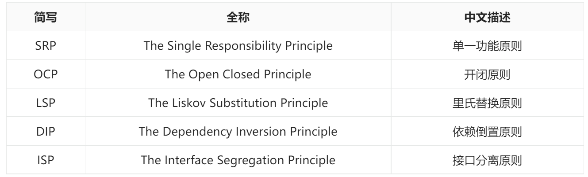
Single Responsibility Principle：单一功能原则
**单一功能原则：**一个类或者模块只负责完成一个职责（或功能）。
简单来说就是保证我们在设计函数、方法时做到功能单一，权责明确，当发生改变时，只有一个改变它的原因。如果函数/方法承担的功能过多，就意味着很多功能会相互耦合，这样当其中一个功能发生改变时，可能会影响其它功能。单一功能原则，可以使代码后期的维护成本更低、改动风险更低。
例如，有以下代码，用来创建一个班级，班级包含老师和学生，代码如下：
package srp
type Class struct {
Teacher *Teacher
Student *Student
}
type Teacher struct {
Name string
Class int
}
type Student struct {
Name string
Class int
}
func createClass(teacherName, studentName string, class int) (*Teacher, *Student) {
teacher := &Teacher{
Name: teacherName,
Class: class,
}
student := &Student{
Name: studentName,
Class: class,
}
return teacher, student
}
func CreateClass() *Class {
teacher, student := createClass("colin", "lily", 1)
return &Class{
Teacher: teacher,
Student: student,
}
}
上面的代码段通过 createClass 函数创建了一个老师和学生，老师和学生属于同一个班级。但是现在因为老师资源不够，要求一个老师管理多个班级。这时候，需要修改 createClass 函数的 class 参数，因为创建学生和老师是通过 createClass 函数的 class 参数偶合在一起，所以修改创建老师的代码，势必会影响创建学生的代码，其实，创建学生的代码我们是压根不想改动的。这时候 createClass 函数就不满足单一功能原则。需要修改为满足单一功能原则的代码，修改后代码段如下：
package srp
type Class struct {
Teacher *Teacher
Student *Student
}
type Teacher struct {
Name string
Class []int
}
type Student struct {
Name string
Class int
}
func CreateStudent(name string, class int) *Student {
return &Student{
Name: name,
Class: class,
}
}
func CreateTeacher(name string, classes []int) *Teacher {
return &Teacher{
Name: name,
Class: classes,
}
}
func CreateClass() *Class {
teacher := CreateTeacher("colin", []int{1, 2})
student := CreateStudent("lily", 1)
return &Class{
Teacher: teacher,
Student: student,
}
}
上述代码，我们将 createClass 函数拆分成 2 个函数 CreateStudent 和 CreateTeacher，分别用来创建学生和老师，各司其职，代码互不影响。
Open / Closed Principle：开闭原则
**开闭原则：**软件实体应该对扩展开放、对修改关闭。
简单来说就是通过在已有代码基础上扩展代码，而非修改代码的方式来完成新功能的添加。开闭原则，并不是说完全杜绝修改，而是尽可能不修改或者以最小的代码修改代价来完成新功能的添加。
以下是一个满足开闭原则的代码段：
type IBook interface {
GetName() string
GetPrice() int
}
// NovelBook 小说
type NovelBook struct {
Name string
Price int
}
func (n *NovelBook) GetName() string {
return n.Name
}
func (n *NovelBook) GetPrice() int {
return n.Price
}
上述代码段，定义了一个 Book 接口和 Book 接口的一个实现：NovelBook（小说）。现在有新的需求，对所有小说打折统一打 5 折，根据开闭原则，打折相关的功能应该利用扩展实现，而不是在原有代码上修改，所以，新增一个 OffNovelBook 接口，继承 NovelBook，并重写 GetPrice 方法。
type OffNovelBook struct {
NovelBook
}
// 重写GetPrice方法
func (n *OffNovelBook) GetPrice() int {
return n.NovelBook.GetPrice() / 5
}
Liskov Substitution Principle：里氏替换原则
**里氏替换原则：**如果 S 是 T 的子类型，则类型 T 的对象可以替换为类型 S 的对象，而不会破坏程序。
简单来说，里氏替换原则要求子类（派生类）能够替换父类（基类）并且不影响程序的行为。也就是说，子类应该继承父类的所有属性和行为，并且可以在不改变程序逻辑的情况下进行扩展。在 Go 开发中，里氏替换原则可以通过接口来实现。
例如，以下是一个符合里氏替换原则的代码段：
type Reader interface {
Read(p []byte) (n int, err error)
}
type Writer interface {
Write(p []byte) (n int, err error)
}
type ReadWriter interface {
Reader
Writer
}
func Write(w Writer, p []byte) (int, error) {
return w.Write(p)
}
我们可以将 Write 函数中的 Writer 参数替换为其子类型 ReadWriter，而不影响已有程序：
func Write(rw ReadWriter, p []byte) (int, error) {
return rw.Write(p)
}
Dependency Inversion Principle：依赖倒置原则
**依赖倒置原则：**依赖于抽象而不是一个实例，其本质是要面向接口编程，不要面向实现编程。
以下是一个不符合依赖倒置原则的示例：
package main
import "fmt"
// 定义一个高层模块
type HighLevelModule struct {
lowLevelModule LowLevelModule
}
func (hlm HighLevelModule) DoSomething() {
hlm.lowLevelModule.DoSomething()
}
// 定义一个低层模块
type LowLevelModule struct{}
func (llm LowLevelModule) DoSomething() {
fmt.Println("Doing something in low level module...")
}
func main() {
llm := LowLevelModule{}
hlm := HighLevelModule{lowLevelModule: llm}
hlm.DoSomething()
}
在上面的示例中，HighLevelModule 依赖于 LowLevelModule，而且在 HighLevelModule 中直接实例化了 LowLevelModule。这不符合依赖倒置原则的原因是高层模块应该依赖于抽象而不是具体的实现，而且高层模块不应该直接依赖于低层模块的具体实现。
为了符合依赖倒置原则，我们可以通过将 LowLevelModule 抽象成接口，并在 HighLevelModule 中依赖于该接口，从而实现依赖倒置。以下是优化后的示例：
package main
import "fmt"
// 定义一个低层模块接口
type LowLevelModule interface {
DoSomething()
}
// 定义一个高层模块
type HighLevelModule struct {
lowLevelModule LowLevelModule
}
func (hlm HighLevelModule) DoSomething() {
hlm.lowLevelModule.DoSomething()
}
// 实现低层模块
type ConcreteLowLevelModule struct{}
func (cllm ConcreteLowLevelModule) DoSomething() {
fmt.Println("Doing something in low level module...")
}
func main() {
cllm := ConcreteLowLevelModule{}
hlm := HighLevelModule{lowLevelModule: cllm}
hlm.DoSomething()
}
在优化后的示例中，我们定义了 LowLevelModule 接口来抽象低层模块，并在 HighLevelModule 中依赖于该接口。同时，我们实现了 ConcreteLowLevelModule 结构体来实现 LowLevelModule 接口。这样就符合了依赖倒置原则，高层模块依赖于抽象接口，而不是具体的实现，降低了模块之间的耦合度。
Interface Segregation Principle：接口隔离原则
**接口隔离原则：**是指客户端不应该依赖它不需要的接口，即一个类对另一个类的依赖应该建立在最小的接口上。具体来说，接口隔离原则要求程序员尽量将臃肿庞大的接口拆分成更小的和更具体的接口，让接口中只包含客户感兴趣的方法。
以下是一个不符合接口隔离原则的示例：
package main
import "fmt"
// 定义一个接口
type Machine interface {
Print()
Scan()
}
// 实现接口
type MultiFunctionMachine struct{}
func (mfm MultiFunctionMachine) Print() {
fmt.Println("Printing...")
}
func (mfm MultiFunctionMachine) Scan() {
fmt.Println("Scanning...")
}
func main() {
mfm := MultiFunctionMachine{}
mfm.Print()
mfm.Scan()
}
在上面的示例中，我们定义了一个 Machine 接口，包含 Print() 和 Scan() 两个方法。然后我们实现了一个 MultiFunctionMachine 结构体来实现这个接口。这个示例不符合接口隔离原则的原因是， MultiFunctionMachine 结构体实现了一个包含打印和扫描功能的接口，但是在实际使用中，可能某些设备只需要其中的一个功能，而不需要同时实现接口中的所有方法。
为了符合接口隔离原则，我们可以将 Machine 接口拆分为两个单一职责的接口，分别表示打印和扫描功能。然后根据需要实现对应的接口。以下是优化后的示例：
package main
import "fmt"
// 定义打印机接口
type Printer interface {
Print()
}
// 定义扫描仪接口
type Scanner interface {
Scan()
}
// 实现打印机
type SimplePrinter struct{}
func (sp SimplePrinter) Print() {
fmt.Println("Printing...")
}
// 实现扫描仪
type SimpleScanner struct{}
func (ss SimpleScanner) Scan() {
fmt.Println("Scanning...")
}
func main() {
sp := SimplePrinter{}
sp.Print()
ss := SimpleScanner{}
ss.Scan()
}
在优化后的示例中，我们将 Machine 接口拆分为 Printer 和 Scanner 两个单一职责的接口，分别表示打印和扫描功能。然后我们分别实现了 SimplePrinter 和 SimpleScanner 结构体来实现这两个接口，每个结构体只实现了对应的功能。这样就遵循了接口隔离原则，将接口按照单一职责进行拆分，避免了一个类需要实现不需要的方法。
充分的测试 Go 代码
**单元测试非常重要。**我们开发完一段代码后，第一个执行的测试就是单元测试。它可以保证我们的代码是符合预期的，一些异常变动能够被及时感知到。进行单元测试，不仅需要编写单元测试用例，还需要我们确保代码是可测试的，以及具有一个高的单元测试覆盖率。
代码质量：编写可测试的代码
如果我们要对函数A进行测试，并且A中的所有代码均能够在单元测试环境下按预期被执行，那么函数A的代码块就是可测试的。我们来看下一般的单元测试环境有什么特点：
- 可能无法连接数据库。
- 可能无法访问第三方服务。
如果函数A依赖数据库连接、第三方服务，那么在单元测试环境下执行单元测试就会失败，函数就没法测试，函数是不可测的。
解决方法也很简单：将依赖的数据库、第三方服务等抽象成接口，在被测代码中调用接口的方法，在测试时传入mock类型，从而将数据库、第三方服务等依赖从具体的被测函数中解耦出去。如下图所示：
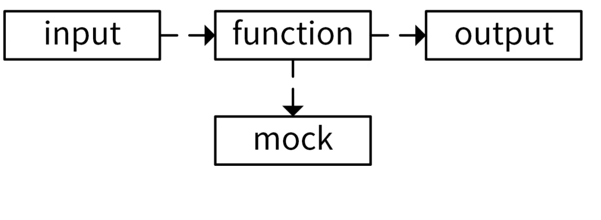
为了提高代码的可测性，降低单元测试的复杂度，对function和mock的要求是：
- 要尽可能减少function中的依赖，让function只依赖必要的模块。编写一个功能单一、职责分明的函数，会有利于减少依赖。
- 依赖模块应该是易Mock的。
为了协助你理解，我们先来看一段不可测试的代码：
package post
import "google.golang.org/grpc"
type Post struct {
Name string
Address string
}
func ListPosts(client *grpc.ClientConn) ([]*Post, error) {
return client.ListPosts()
}
这段代码中的ListPosts函数是不可测试的。因为ListPosts函数中调用了client.ListPosts()方法，该方法依赖于一个gRPC连接。而我们在做单元测试时，可能因为没有配置gRPC服务的地址、网络隔离等原因，导致没法建立gRPC连接，从而导致ListPosts函数执行失败。
下面，我们把这段代码改成可测试的，如下：
package main
type Post struct {
Name string
Address string
}
type Service interface {
ListPosts() ([]*Post, error)
}
func ListPosts(svc Service) ([]*Post, error) {
return svc.ListPosts()
}
上面代码中，ListPosts函数入参为Service接口类型，只要我们传入一个实现了Service接口类型的实例，ListPosts函数即可成功运行。因此，我们可以在单元测试中可以实现一个不依赖任何第三方服务的fake实例，并传给ListPosts。上述可测代码的单元测试代码如下：
package main
import "testing"
type fakeService struct {
}
func NewFakeService() Service {
return &fakeService{}
}
func (s *fakeService) ListPosts() ([]*Post, error) {
posts := make([]*Post, 0)
posts = append(posts, &Post{
Name: "colin",
Address: "Shenzhen",
})
posts = append(posts, &Post{
Name: "alex",
Address: "Beijing",
})
return posts, nil
}
func TestListPosts(t *testing.T) {
fake := NewFakeService()
if _, err := ListPosts(fake); err != nil {
t.Fatal("list posts failed")
}
}
当我们的代码可测之后，就可以借助一些工具来Mock需要的接口了。常用的Mock工具，有这么几个：
- golang/mock，是官方提供的Mock框架。它实现了基于interface的Mock功能，能够与Golang内置的testing包做很好的集成，是最常用的Mock工具。golang/mock提供了mockgen工具用来生成interface对应的Mock源文件。
- sqlmock，可以用来模拟数据库连接。数据库是项目中比较常见的依赖，在遇到数据库依赖时都可以用它。
- httpmock，可以用来Mock HTTP请求。
- bouk/monkey，猴子补丁，能够通过替换函数指针的方式来修改任意函数的实现。如果golang/mock、sqlmock和httpmock这几种方法都不能满足我们的需求，我们可以尝试通过猴子补丁的方式来Mock依赖。可以这么说，猴子补丁提供了单元测试 Mock 依赖的最终解决方案。
代码质量：高单元测试覆盖率
接下来，我们再一起看看如何提高我们的单元测试覆盖率。
当我们编写了可测试的代码之后，接下来就需要编写足够的测试用例，用来提高项目的单元测试覆盖率。这里我有以下两个建议供你参考：
- 使用gotests工具自动生成单元测试代码，减少编写单元测试用例的工作量，将你从重复的劳动中解放出来。
- 定期检查单元测试覆盖率。你可以通过以下方法来检查：
$ go test -race -cover -coverprofile=./coverage.out -timeout=10m -short -v ./...
$ go tool cover -func ./coverage.out
执行结果如下：
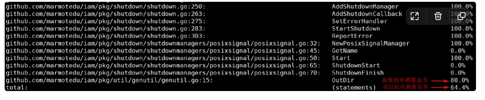
在提高项目的单元测试覆盖率时，我们可以先提高单元测试覆盖率低的函数，之后再检查项目的单元测试覆盖率；如果项目的单元测试覆盖率仍然低于期望的值，可以再次提高单元测试覆盖率低的函数的覆盖率，然后再检查。以此循环，最终将项目的单元测试覆盖率优化到预期的值为止。
这里要注意，对于一些可能经常会变动的函数单元测试，覆盖率要达到100%。
说完了单元测试，我们再看看如何通过Code Review来保证代码质量。
Code Review可以提高代码质量、交叉排查缺陷，并且促进团队内知识共享，是保障代码质量非常有效的手段。在我们的项目开发中，一定要建立一套持久可行的Code Review机制。
但在我的研发生涯中，发现很多团队没有建立有效的Code Review机制。这些团队都认可Code Review机制带来的好处，但是因为流程难以遵守，慢慢地Code Review就变成了形式主义，最终不了了之。其实，建立Code Review机制很简单，主要有3点：
- 首先，确保我们使用的代码托管平台有Code Review的功能。比如，GitHub、GitLab这类代码托管平台都具备这种能力。
- 接着，建立一套Code Review规范，规定如何进行Code Review。
- 最后，也是最重要的，每次代码变更，相关开发人员都要去落实Code Review机制，并形成习惯，直到最后形成团队文化。
确保代码性能
项目上线前，我们还需要通过性能优化、并发优化、压力测试等手段，来保证接口的性能：
- 性能优化：项目上线前要对接口性能进行测试，确保接口延时在预期范围内，一般建议是 < 500ms。如果接口性能不符合预期，还要进行性能优化。Go 代码优化一般使用pprof工具。
- 并发优化：测试 Go 程序的并发能力，根据预期优化 Go 的能发能力
- 压力测试：通过压力测试查找性能阈值，并具此评估需要的系统资源、副本数等。
积极的维护项目
项目上线后就结束了吗？当然不是，我们还需要再后期积极的维护项目，让项目功能越来越丰富、性能越来越好、稳定性越来越高。
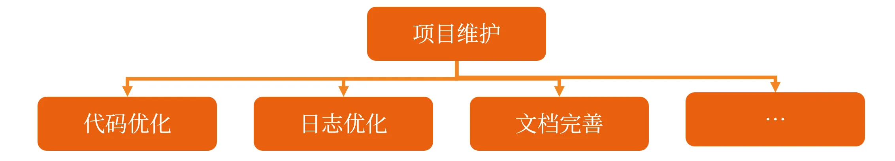
-
随着项目迭代，也可能会遇到需要重构的场景，但这时候，重构成本很高，甚至无法完成重构。所以，项目在设计阶段，从架构、功能上都要设计的灵活、可扩展，保证项目能够满足当前以及未来的需求
-
我的职业生涯中，遇到过多次，项目重构的场景：
- 要么重构工作量大，重构只停留在方案阶段，实际无法重构
- 要么重构过程中，遇到一些无法解决/很难解决的卡点，重构的一知半解
- 要么花费很多时间、人力才完成项目的重构
-
尽量避免重构，真的需要重构时，也要果断
编写高质量的项目文档
工作中我发现，很多开发者非常注重代码产出，但不注重文档产出。他们觉得，即使没有软件文档也没太大关系，不影响软件交付。我要说的是，这种看法是错误的！因为文档属于软件交付的一个重要组成部分，没有文档的项目很难理解、部署和使用。
因此，编写文档是一个必不可少的开发工作。那么一个项目需要编写哪些文档，又该如何编写呢？我认为项目中最需要的 3 类文档是 README 文档、项目文档和 API 接口文档。
下面，我们一一来说它们的编写规范。
README 规范
README 文档是项目的门面，它是开发者学习项目时第一个阅读的文档，会放在项目的根目录下。因为它主要是用来介绍项目的功能、安装、部署和使用的，所以它是可以规范化的。
下面，我们直接通过一个 README 模板，来看一下 README 规范中的内容：
# 项目名称
<!-- 写一段简短的话描述项目 -->
## 功能特性
<!-- 描述该项目的核心功能点 -->
## 软件架构(可选)
<!-- 可以描述下项目的架构 -->
## 快速开始
### 依赖检查
<!-- 描述该项目的依赖，比如依赖的包、工具或者其他任何依赖项 -->
### 构建
<!-- 描述如何构建该项目 -->
### 运行
<!-- 描述如何运行该项目 -->
## 使用指南
<!-- 描述如何使用该项目 -->
## 如何贡献
<!-- 告诉其他开发者如果给该项目贡献源码 -->
## 社区(可选)
<!-- 如果有需要可以介绍一些社区相关的内容 -->
## 关于作者
<!-- 这里写上项目作者 -->
## 谁在用(可选)
<!-- 可以列出使用本项目的其他有影响力的项目，算是给项目打个广告吧 -->
## 许可证
<!-- 这里链接上该项目的开源许可证 -->
更具体的示例，你可以参考 OneX 系统的 README.md。
如果你不想手动编写 README.md 文件，你可以借助在线的 README 文档生成工具。例如 readme.so，来帮助你生成格式规范，内容全的 README 文档。
项目文档规范
项目文档包括一切需要文档化的内容，它们通常集中放在/docs 目录下。当我们在创建团队的项目文档时，通常会预先规划并创建好一些目录，用来存放不同的文档。因此，在开始 Go 项目开发之前，我们也要制定一个软件文档规范。好的文档规范有 2 个优点：易读和可以快速定位文档。
不同项目有不同的文档需求，在制定文档规范时，你可以考虑包含两类文档。
- 开发文档：用来说明项目的开发流程，比如如何搭建开发环境、构建二进制文件、测试、部署等。
- 用户文档：软件的使用文档，对象一般是软件的使用者，内容可根据需要添加。比如，可以包括 API 文档、SDK 文档、安装文档、功能介绍文档、最佳实践、操作指南、常见问题等。
为了方便全球开发者和用户使用，开发文档和用户文档，可以预先规划好英文和中文 2 个版本。
为了加深你的理解，这里我们来看下实战项目的文档目录结构：
docs
├── devel # 开发文档，可以提前规划好，英文版文档和中文版文档
│ ├── en-US/ # 英文版文档，可以根据需要组织文件结构
│ └── zh-CN # 中文版文档，可以根据需要组织文件结构
│ └── development.md # 开发手册，可以说明如何编译、构建、运行项目
├── guide # 用户文档
│ ├── en-US/ # 英文版文档，可以根据需要组织文件结构
│ └── zh-CN # 中文版文档，可以根据需要组织文件结构
│ ├── api/ # API文档
│ ├── best-practice # 最佳实践，存放一些比较重要的实践文章
│ │ └── authorization.md
│ ├── faq # 常见问题
│ │ ├── onex-apiserver
│ │ └── installation
│ ├── installation # 安装文档
│ │ └── installation.md
│ ├── introduction/ # 产品介绍文档
│ ├── operation-guide # 操作指南，里面可以根据RESTful资源再划分为更细的子目录，用来存放系统核心/全部功能的操作手册
│ │ ├── policy.md
│ │ ├── secret.md
│ │ └── user.md
│ ├── quickstart # 快速入门
│ │ └── quickstart.md
│ ├── README.md # 用户文档入口文件
│ └── sdk # SDK文档
│ └── golang.md
└── images # 图片存放目录
└── 部署架构v1.png